Block
Sajtens byggda block, klonade från sin kanoniska källa och bundna till tokens. Varje block visas renderat med systemets klasser, med anatomi, källa, gör och gör inte, kod och de avvikelser som klonen gör mot källan.
konsolidering/komponenter-karta.md (Block), inventering/<slug>.md + .json, källkoden i kallor/. CSS: system/components/block.css. Knappar, eyebrows, taggar, proof-rad, listor och kort kommer från S2:s filer (knappar.css, text.css, ytor.css).
Fullständiga kloner (pixelparitet mot källan är målet): processteg, kvittopanel, avdragsblock, testimonial-kort, certifikat-band, eljour, sticky call-bar, CTA-band, före/efter, visste du att, fotobedömningens kort och formläge, tidslinje, bokningskort, bekräftelse-bocken. Förenklade skal (strukturen och måtten klonade, interaktion och innehåll trimmat): slider-skalet, header med EN mega-meny, footer, hero-1, hero-2 (S renderad, G/Z/E som bild), mini-menu, vår process, artikelkomponenterna. Status per block står i blockbiblioteket.
Processteg med ringar och connector
Tre steg i en kolumn: en ring per steg vars båge fylls en tredjedel, två tredjedelar och helt, i samma spår som linjen mellan stegen. Används i avdragsblocket på tjänstesidorna, alltid till vänster om kvittot.
Kanon: rot-gt-cro (designs/d2-kvittot-forst.html:163-217, variant F, auktoritet 2). Finns även i: live ROT/GT-blocket (penselringar 95 px + JS-linjer, avvikelse: tre kolumner, ikon i st.f. båge), var-process v2 (medaljong 24 + 1 px räls), offer-accepted (gradientnoder 42, se tidslinjen). Blockbiblioteket
Steg för steg
-
Få offert inklusive ROT-avdrag
En elektriker räknar på ditt projekt. Offerten visar vad du betalar och vad som ingår, innan du bestämmer dig.
-
En auktoriserad elektriker gör jobbet
En av våra elektriker kommer hem till dig och utför installationen metodiskt, med högsta kvalitet.
-
Du slipper pappersarbetet
Avdraget dras på fakturan. Ansökan till Skatteverket skickar vi in åt dig.
Bågen är en SVG-cirkel med stroke-dasharray (46/92 = en tredjedel av omkretsen 138). Connectorn och spåret är samma teal i 20 procent.
Anatomi
| Del | 1440 | 390 | Token |
|---|---|---|---|
| Ring (diameter) | 46 px | 36 px | komponent-egen --_n |
| Spår / båge | 2 px teal .20 / 3 px teal | samma | --ampy-action |
| Siffra | 17 px / 500 | 14,5 px | --ampy-w-medium, tabular-nums |
| Rubrik (h3) | 22 px / 600 / lh 1.25 | 20,1 px | --ampy-text-h3, --ampy-w-strong |
| Text | 18 px / 300 / lh 1.5, 58ch | 16,1 px | --ampy-text-body |
| Steg till steg | 44 px | 28 px | --_gap clamp(32, 3.1vw, 44) |
| Kolumn ring till text / rad | 19,8 / 6 px | 13,3 / 6 px | --ampy-space-s |
| Caps "Steg för steg" | 13 px / 700 / .12em versal | samma | --ampy-fine, --ampy-w-display |
- Låt ringen fyllas i takt med stegen: en tredjedel, två tredjedelar, hel. Märke och linje är en idé.
- Håll texten på 58ch och h3 på en rad där det går; ringens mitt linjerar mot rubrikens versalband.
- Behåll
role="list"på listan: WebKit tar bort listrollen när list-style släcks.
- Fyll inte ringen med teal som platta. Siffran står ensam i navy; bågen bär förloppet.
- Lägg inte stegen i tre kolumner på desktop (live-blockets gamla grid). Kolumnen läses uppifrån och ned.
- Bocka inte av stegen som klara (steg 1 med fylld ring läses som "avklarat", och inget är avklarat).
Kod
<div class="ampy-section--demo" style="max-width:72rem">
<p class="ampy-steps__cap">Steg för steg</p>
<ol class="ampy-steps" role="list">
<li class="ampy-step" role="listitem">
<span class="ampy-step__n" aria-hidden="true"><svg class="ampy-step__ring" viewBox="0 0 48 48"><circle class="track" cx="24" cy="24" r="22"/><circle class="arc" cx="24" cy="24" r="22" stroke-dasharray="46.08 92.15"/></svg><span>1</span></span>
<h3 class="ampy-step__title">Få offert inklusive ROT-avdrag</h3>
<p class="ampy-step__text">En elektriker räknar på ditt projekt. Offerten visar vad du betalar och vad som ingår, innan du bestämmer dig.</p>
</li>
<li class="ampy-step" role="listitem">
<span class="ampy-step__n" aria-hidden="true"><svg class="ampy-step__ring" viewBox="0 0 48 48"><circle class="track" cx="24" cy="24" r="22"/><circle class="arc" cx="24" cy="24" r="22" stroke-dasharray="92.15 46.08"/></svg><span>2</span></span>
<h3 class="ampy-step__title">En auktoriserad elektriker gör jobbet</h3>
<p class="ampy-step__text">En av våra elektriker kommer hem till dig och utför installationen metodiskt, med högsta kvalitet.</p>
</li>
<li class="ampy-step" role="listitem">
<span class="ampy-step__n" aria-hidden="true"><svg class="ampy-step__ring" viewBox="0 0 48 48"><circle class="track" cx="24" cy="24" r="22"/><circle class="arc" cx="24" cy="24" r="22" stroke-dasharray="138.23 0"/></svg><span>3</span></span>
<h3 class="ampy-step__title">Du slipper pappersarbetet</h3>
<p class="ampy-step__text">Avdraget dras på fakturan. Ansökan till Skatteverket skickar vi in åt dig.</p>
</li>
</ol>
</div>
Avvikelser i klonen
- Källan sätter rubrikvikt 450 och h3 19 till 23 px (egen clamp). Klonen använder h3-rollen 20 till 22 px / 600 (beslut B2: vikterna 450/550 utgår).
- Källans caps-marginal 36 px är bunden till
--ampy-space-l(39,6 px vid 1440). - Live-blocket (auktoritet 1) ser annorlunda ut: tre kolumner, penselringar och JS-ritade linjer. Det är drift som familjen D2 ersätter på 278 sidor.
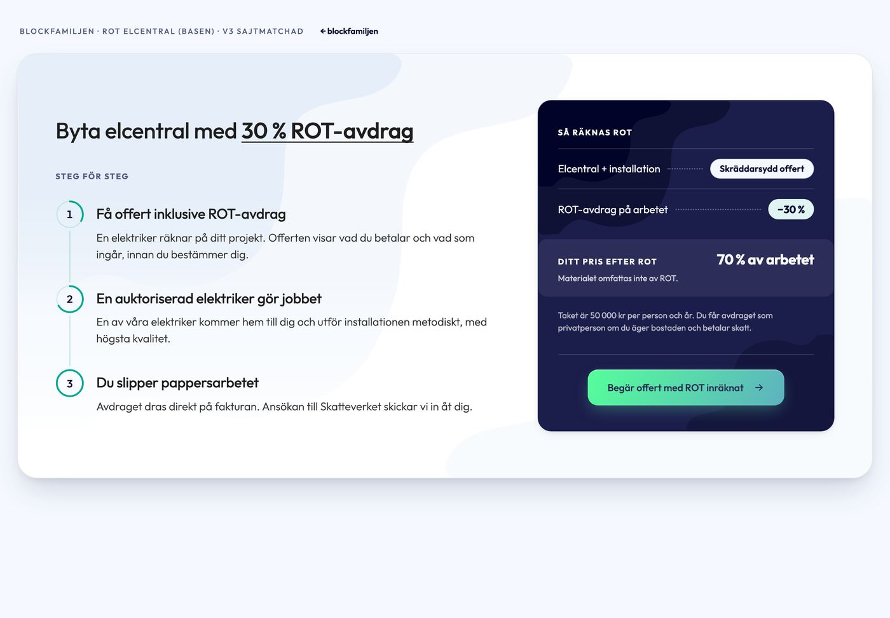
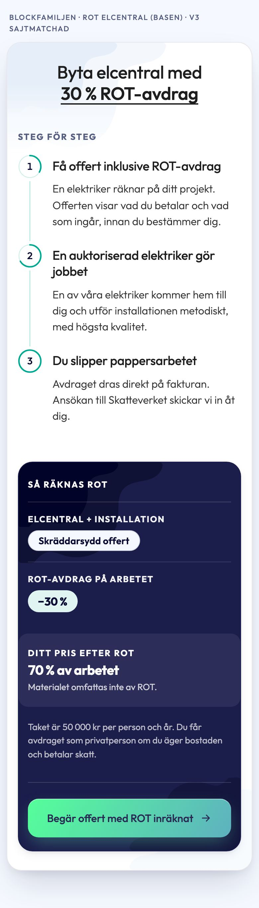
Kvittopanel "Så räknas ditt pris"
Avdragets räkning som ett kvitto: caps-rubrik, rader med prickade ledare, en offert-pill, ett avdragschip och en totalplatta. Läsbar på tre sekunder utan interaktion. Ljus som standard, mörk på ROT-blocket.
Kanon: rot-gt-cro (designs/d2-kvittot-forst.html:220-300, auktoritet 2). Finns även i: booking-confirmation (kvittorader med dashed ledare + totalplatta, se bokningskortet), rot-gt totalrad = S2:s .ampy-price.
Så räknas ROT
Taket är 50 000 kr per person och år. Du får avdraget som privatperson om du äger bostaden och betalar skatt.
Så räknas Grön Teknik
Taket är 50 000 kr per person och år. Räcker inte din skatt kan Skatteverket kräva mellanskillnaden i slutskatten.
Ljus panel (GT-produkt, hemförsäkring) och mörk panel (ROT-blocket, ägartest 2026-08-16). Den mörka bär klassen ampy-on-dark så knappens fokusring och pillarna byter färg. Vid panelbredd under 400 px byter raderna till etikett över värde (container query).
Anatomi
| Del | 1440 | 390 | Token |
|---|---|---|---|
| Panel | padding 44 / 32, radie 20, 1 px kant | 24 / 14, radie 16,3 | --ampy-radius-card, --ampy-line, --ampy-shadow-card |
| Caps-rubrik | 13 px / 700 / .12em, linje under | samma | --ampy-fine |
| Rad | 17 px, padding 19,8 / 0, ledare 2 px dotted | 17 px, 13,3 / 0 | --_row 17 (saknar token) |
| Offert-pill | 14,5 px / 600, 4 x 15, pill | samma | --ampy-bg-subtle, --ampy-radius-pill |
| Avdragschip | 17 px / 700 navy på teal-tint | samma | --apteal-tint |
| Totalplatta | 20 px luft, radie 12, belopp 22 px / 700 | radie 10, belopp 20 px | --ampy-bg-tint-action, --ampy-text-h3 |
| Not och finstilt | 13,5 px / 400 / 1.5, 62ch | samma | --ampy-ink-muted |
| CTA-zon | 32 px över avdelaren, 24 under, knapp 58 h | knapp full bredd under 430 | .ampy-btn--primary |
- Skriv "avdrag", aldrig "rabatt" eller "spara". Kvittot lovar en regel, inte ett pris.
- Låt totalplattan vara panelens enda dominant: störst i panelen, mindre än H2:n utanför.
- Sätt undantaget där misstaget görs: "Materialet omfattas inte av ROT" står i totalplattan, inte tre rader ned.
- Ingen fjärde textstorlek i panelen. Skalan är 13 / 14,5 / 17 / 20 till 24, desktop och mobil.
- Klä inte av pillarna på mobil. Etiketten kliver in i caps-rollen, pillarna förblir pillar.
- Ingen "Du får X kr tillbaka". Inget betalas tillbaka: avdraget dras på fakturan.
Kod
<section class="ampy-receipt" aria-labelledby="rc-cap-1">
<h3 class="ampy-receipt__cap" id="rc-cap-1">Så räknas ROT</h3>
<div class="ampy-receipt__row"><span class="ampy-receipt__lbl">Elcentral + installation</span><span class="ampy-receipt__dots" aria-hidden="true"></span><span class="ampy-receipt__amt"><span class="ampy-receipt__pill">Skräddarsydd offert</span></span></div>
<div class="ampy-receipt__row ampy-receipt__row--deduct"><span class="ampy-receipt__lbl">ROT-avdrag på arbetet</span><span class="ampy-receipt__dots" aria-hidden="true"></span><span class="ampy-receipt__amt">−30 %</span></div>
<div class="ampy-receipt__total"><span class="ampy-receipt__tlabel">Ditt pris efter ROT</span><span class="ampy-receipt__amt">70 % av arbetet</span><span class="ampy-receipt__tnote">Materialet omfattas inte av ROT.</span></div>
<p class="ampy-receipt__fine">Taket är 50 000 kr per person och år. Du får avdraget som privatperson om du äger bostaden och betalar skatt.</p>
<div class="ampy-receipt__cta"><a class="ampy-btn ampy-btn--primary" href="#">Begär offert med ROT inräknat <svg class="ampy-btn__icon" aria-hidden="true"><use href="../../system/ikoner.svg#ik-arrow-right"/></svg></a></div>
</section>
Avvikelser i klonen
- Mörk panel: källan använder rgb(27,29,75) (Bricks
--color-18, "hero-receptet") med tre blobbar. Klonen använder--ampy-bg-dark(midnight, beslut B9: platt) utan blobbar. - Panelradie 22 och totalplattans 14 ligger utanför skalan; klonen tar
--ampy-radius-card(20) och--ampy-radius-field(12). - Avdragschipets yta #e0f5f2 blir
--apteal-tint#e3f6f1 (tokens.css listar #e0f5f2 som drift). - Källans kant .16 blir
--ampy-line.14; den tvådelade skuggan blir--ampy-shadow-card.
Avdragsblocket: H2, stegen och kvittot
Blocket i position 2 på tjänstesidorna (efter heron): en H2 med understruken accent, stegen till vänster och kvittopanelen till höger, i ett fullbreddskort med tre ljusa vågor. Stegen och kvittot ovan monterade.
Kanon: rot-gt-cro (designs/d2-kvittot-forst.html:94-135 .av-block + .av-grid, auktoritet 2, 278 sidor mappade). Finns även i: live ROT/GT (vitt kort radie 20, husets skugga), designs/gt-produkt, gt-generisk, hemforsakring (samma skal, ljus panel).
Byta elcentral med 30 % ROT-avdrag
Steg för steg
Få offert inklusive ROT-avdrag
En elektriker räknar på ditt projekt. Offerten visar vad du betalar och vad som ingår, innan du bestämmer dig.
En auktoriserad elektriker gör jobbet
En av våra elektriker kommer hem till dig och utför installationen metodiskt, med högsta kvalitet.
Du slipper pappersarbetet
Avdraget dras på fakturan. Ansökan till Skatteverket skickar vi in åt dig.
Så räknas ROT
Taket är 50 000 kr per person och år. Du får avdraget som privatperson om du äger bostaden och betalar skatt.
Kortet är sin egen container: kolumnerna följer kortets bredd (37 cqi för panelen), inte viewportens. Under 1024 px kortbredd staplas H2, stegen och panelen med 56 px mellan steg och panel.
Anatomi
| Del | 1440 | 390 | Token |
|---|---|---|---|
| Kort | padding 75 / 61, radie 32, 1 px kant | 28 / 16, radie 16,3 | --ampy-radius-card-lg, --ampy-shadow-raised |
| Grid | 1fr + clamp(480, 37cqi, 530), gap 79 | en kolumn, gap 56 | cqi mot kortet |
| H2 | 36 px / 500 / 1.2 / -.01em, 30ch, mb 44 | 26,8 px, centrerad, mb 40 | --ampy-text-h2 |
| Accent | 600 + 2 px understrykning, offset 5 | bryts (nowrap släpps) | --ampy-w-strong |
| Vågor | 65 / 45 / 50 procent, masktonade | samma | hero-2:s tre former i ljus ton |
- Följ H2-mallen: "[jobb] med [sats] % [avdragsnamn]", accenten på hela förmånsfrasen sist.
- Låt panelen sträcka sig till vänsterspaltens höjd med CTA-zonen längst ned (slacken hamnar i CTA-luften).
- Kör blocket i full bredd (ägardirektiv 2026-08-14); innerlayouten cappas på 1560 från 1497 px kortbredd.
- Inga två gradient-CTA:er i samma vy: panelens knapp är blockets enda.
- Inga priser i blocket på tjänstesidorna (ägardirektiv 2026-08-13): kvittot visar regeln, offerten priset.
- Ingen "spara upp till 50 000 kr" som rubrik. Taket står i finstilten, som regel.
Kod
<section class="ampy-avdrag ampy-avdrag--wave" aria-labelledby="av-h2">
<svg class="ampy-avdrag__wave ampy-avdrag__wave--1" aria-hidden="true" xmlns="http://www.w3.org/2000/svg" width="984" height="687" viewBox="0 0 984 687" fill="none"><path d="M0.101004 20.0619C0.600584 8.84058 9.84347 1.17382e-07 21.076 2.51328e-07L961.412 1.14647e-05C974.498 1.16208e-05 985.418 10.5972 982.854 23.4296C977.67 49.3741 963.295 73.6508 941.937 90.4135C880.337 138.634 779.032 119.487 722.751 173.262C689.848 204.7 682.055 252.683 681.19 297.121C680.447 341.56 679.548 400.042 664.087 442.116C634.895 521.42 616.787 565.147 537.627 609.796C458.468 654.446 363.331 653.812 293.761 628.364C224.191 602.917 192.614 599.726 146.503 638.806C100.393 677.886 116.456 684.221 85.1146 683.693C53.7734 683.165 -2.71524 700.588 0.101498 660.353C2.91823 620.118 0.101004 20.0619 0.101004 20.0619Z" fill="#eef4fc" fill-opacity="0.67"/></svg>
<svg class="ampy-avdrag__wave ampy-avdrag__wave--2" aria-hidden="true" xmlns="http://www.w3.org/2000/svg" width="665" height="431" viewBox="0 0 665 431" fill="none"><path d="M0.0683953 12.5861C0.40702 5.53937 6.21896 7.41603e-08 13.2739 1.58289e-07L643.451 7.67308e-06C656.524 7.82897e-06 667.543 10.7797 663.153 23.093C658.5 36.1404 649.782 48.0384 637.839 56.7222C596.127 86.974 527.527 74.962 489.416 108.699C467.136 128.422 461.859 158.525 461.272 186.404C460.77 214.283 460.161 250.972 449.691 277.368C429.924 327.121 417.662 354.553 364.058 382.565C310.455 410.577 246.032 410.179 198.922 394.214C151.813 378.249 130.43 376.247 99.2059 400.765C67.9818 425.282 78.859 429.256 57.636 428.925C36.413 428.594 -1.83864 439.524 0.0687298 414.283C1.9761 389.041 0.0683953 12.5861 0.0683953 12.5861Z" fill="#e6eff9"/></svg>
<svg class="ampy-avdrag__wave ampy-avdrag__wave--3" aria-hidden="true" xmlns="http://www.w3.org/2000/svg" width="742" height="487" viewBox="0 0 742 487" fill="none"><path d="M741.369 472.779C740.991 480.74 734.427 487 726.457 487L21.0013 487C7.92631 487 -3.07046 476.287 0.783671 463.793C5.67881 447.924 15.7866 433.357 29.9721 422.908C76.5003 388.725 153.019 402.298 195.53 364.178C220.382 341.892 226.268 307.878 226.922 276.377C227.483 244.875 228.162 203.419 239.841 173.593C261.89 117.376 275.568 86.3793 335.359 54.7281C395.151 23.0768 467.011 23.5263 519.559 41.5655C572.107 59.6047 595.958 61.8668 630.787 34.1639C665.615 6.46096 653.483 1.97007 677.156 2.34433C700.829 2.7186 743.496 -9.63196 741.369 18.8895C739.241 47.411 741.369 472.779 741.369 472.779Z" fill="#eef4fc" fill-opacity="0.39"/></svg>
<div class="ampy-avdrag__grid">
<div>
<h2 class="ampy-avdrag__h2" id="av-h2">Byta elcentral med <span class="ampy-avdrag__accent">30 % ROT-avdrag</span></h2>
<p class="ampy-steps__cap">Steg för steg</p>
<ol class="ampy-steps" role="list">
<li class="ampy-step" role="listitem"><span class="ampy-step__n" aria-hidden="true"><svg class="ampy-step__ring" viewBox="0 0 48 48"><circle class="track" cx="24" cy="24" r="22"/><circle class="arc" cx="24" cy="24" r="22" stroke-dasharray="46.08 92.15"/></svg><span>1</span></span><h3 class="ampy-step__title">Få offert inklusive ROT-avdrag</h3><p class="ampy-step__text">En elektriker räknar på ditt projekt. Offerten visar vad du betalar och vad som ingår, innan du bestämmer dig.</p></li>
<li class="ampy-step" role="listitem"><span class="ampy-step__n" aria-hidden="true"><svg class="ampy-step__ring" viewBox="0 0 48 48"><circle class="track" cx="24" cy="24" r="22"/><circle class="arc" cx="24" cy="24" r="22" stroke-dasharray="92.15 46.08"/></svg><span>2</span></span><h3 class="ampy-step__title">En auktoriserad elektriker gör jobbet</h3><p class="ampy-step__text">En av våra elektriker kommer hem till dig och utför installationen metodiskt, med högsta kvalitet.</p></li>
<li class="ampy-step" role="listitem"><span class="ampy-step__n" aria-hidden="true"><svg class="ampy-step__ring" viewBox="0 0 48 48"><circle class="track" cx="24" cy="24" r="22"/><circle class="arc" cx="24" cy="24" r="22" stroke-dasharray="138.23 0"/></svg><span>3</span></span><h3 class="ampy-step__title">Du slipper pappersarbetet</h3><p class="ampy-step__text">Avdraget dras på fakturan. Ansökan till Skatteverket skickar vi in åt dig.</p></li>
</ol>
</div>
<section class="ampy-receipt ampy-receipt--dark ampy-on-dark" aria-labelledby="av-cap">
<h3 class="ampy-receipt__cap" id="av-cap">Så räknas ROT</h3>
<div class="ampy-receipt__row"><span class="ampy-receipt__lbl">Elcentral + installation</span><span class="ampy-receipt__dots" aria-hidden="true"></span><span class="ampy-receipt__amt"><span class="ampy-receipt__pill">Skräddarsydd offert</span></span></div>
<div class="ampy-receipt__row ampy-receipt__row--deduct"><span class="ampy-receipt__lbl">ROT-avdrag på arbetet</span><span class="ampy-receipt__dots" aria-hidden="true"></span><span class="ampy-receipt__amt">−30 %</span></div>
<div class="ampy-receipt__total"><span class="ampy-receipt__tlabel">Ditt pris efter ROT</span><span class="ampy-receipt__amt">70 % av arbetet</span><span class="ampy-receipt__tnote">Materialet omfattas inte av ROT.</span></div>
<p class="ampy-receipt__fine">Taket är 50 000 kr per person och år. Du får avdraget som privatperson om du äger bostaden och betalar skatt.</p>
<div class="ampy-receipt__cta"><a class="ampy-btn ampy-btn--primary" href="#">Begär offert med ROT inräknat <svg class="ampy-btn__icon" aria-hidden="true"><use href="../../system/ikoner.svg#ik-arrow-right"/></svg></a></div>
</section>
</div>
</section>
Avvikelser i klonen
- Källans skugga (0 24px 50px -10px .18) blir
--ampy-shadow-raised; kanten .10 blir--ampy-line. - Vågornas toner #eef4fc och #e6eff9 saknar token och står som literaler i SVG:n (dekor, inte yta).
- Källans H2-vikt 450 blir 500 och accentens 550 blir 600 (B2).
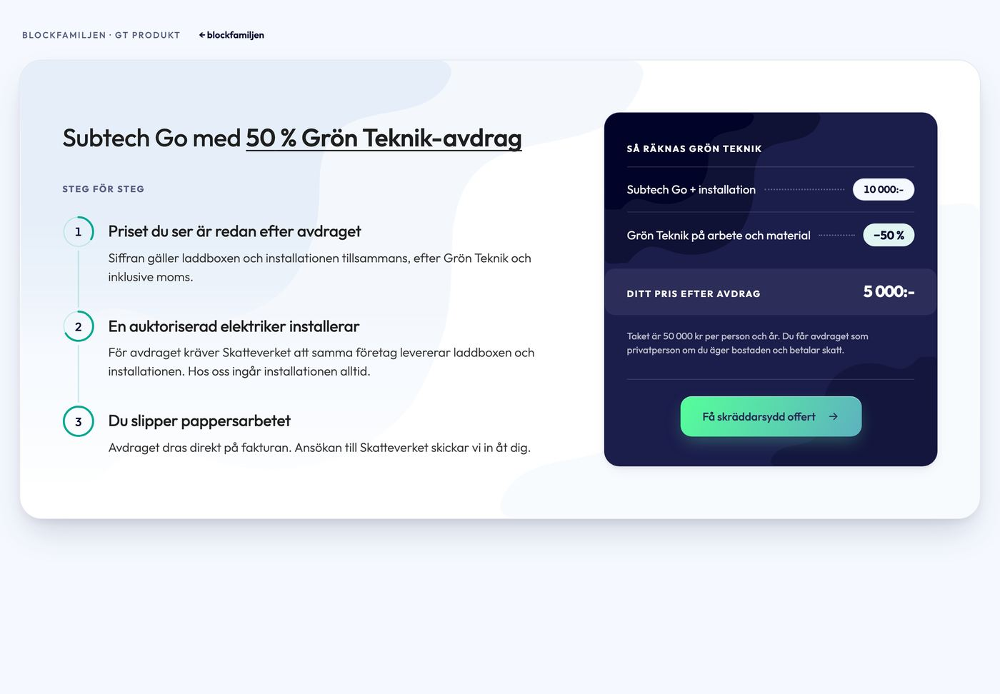
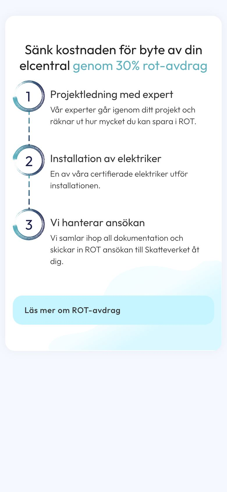
Testimonial-kort och slider-skal
Mörka omdömeskort i en slider med fyra prickar och EN CTA: Google-betyget. Kortet är tredelat: citattecken och Google-G i toppen, texten vertikalt centrerad, namn, hårlinje, stjärnor och datum i foten.
Kanon: testimonials-block (delivery/ampy-testimonials.css:41-98, V1 låst 2026-07-19, auktoritet 1). Finns även i: live-baslinjen (kort 383 x 360 utan datum, Bricks-paginering), picasso components/testimonials (samma). Citatets typografi: S2:s .ampy-quote. Blockbiblioteket
Skalet är statiskt: tre kort i grid (Splide perPage 3/2/1 i källan), prick 1 aktiv med fyllningen på 60 procent. Omdömena är riktiga recensioner ur V1:s datafil. "5 av 5" är [GAP] mot ampy-foretagsdata (candour-grind i källans README): taggen står i exemplet.
Anatomi
| Del | 1440 | 390 | Token |
|---|---|---|---|
| Kort | 384 x 394 (3-upp), min 360, padding 28 / 28 / 39,6, radie 16 | min 300, padding 16,9 / 21,5 | --ampy-space-m/-l, radie: --ampy-radius-card |
| Citattecken | 56 px / 600 neonmint .55, höjd 24 | samma | --apneon-mint |
| Text | 19 px / 300 / 1.5 vit .95 | 17,1 px | egen kurva --_text |
| Namn | 22 px / 600 | 20,1 px | --ampy-text-h3 |
| Stjärnor + datum | 15 px guld, 12 px / 400 vit .72 | samma | --apgoogle-gold, --ampy-text-eyebrow |
| Rubrik | 36 px / 500 / 1.15, max 720 | clamp(23, 6.4vw, 27), subline dold | --ampy-text-h2 |
| Prickar | 24 x 6, aktiv 44 x 6, träffyta +12 px | samma | --ampy-radius-pill |
| Badge | 44 h, stjärnor 18, text 18 / 300 + 600 | 17 / 16 | --ampy-text-body |
- Ett konverteringsmål: Google-profilen. Inget påhittat socialt bevis utöver riktiga recensioner.
- Låt prickarna fyllas i takt med autoplayen; reduced-motion ger en statisk markör.
- Behåll kortets tredelning med vertikalt centrerad text och jämn radhöjd per brytpunkt.
- Inga pilar, ingen Bricks-paginering, inget vitt bakgrundskort som sticker ut 150 px per sida (live-baslinjen).
- Inget datum under 12 px (källan mätte 10,1 px på mobil via
--aptext-xs). - Inga citat utan namn och datum, inga påhittade citat.
Kod
<section class="ampy-slider ampy-band" aria-label="Kundomdömen">
<header class="ampy-slider__head">
<h2 class="ampy-slider__heading">Vad säger dina grannar om Ampy?</h2>
<p class="ampy-slider__sub">Riktiga omdömen från riktiga jobb.</p>
</header>
<ul class="ampy-slider__track">
<li><figure class="ampy-testimonial ampy-on-dark">
<div class="ampy-testimonial__top"><span class="ampy-testimonial__quote" aria-hidden="true">”</span><svg class="ampy-testimonial__google" aria-hidden="true"><use href="../../system/ikoner.svg#ik-google"/></svg></div>
<div class="ampy-testimonial__body"><blockquote class="ampy-testimonial__text">Blev rekommenderad av en granne att gå via Ampy. Är otroligt nöjd med det valet.</blockquote></div>
<figcaption class="ampy-testimonial__foot"><div class="ampy-testimonial__name">Filip Eriksson</div><hr class="ampy-testimonial__divider"><div class="ampy-testimonial__meta"><span class="ampy-testimonial__stars" role="img" aria-label="5 av 5 stjärnor"><svg><use href="../../system/ikoner.svg#ik-star"/></svg><svg><use href="../../system/ikoner.svg#ik-star"/></svg><svg><use href="../../system/ikoner.svg#ik-star"/></svg><svg><use href="../../system/ikoner.svg#ik-star"/></svg><svg><use href="../../system/ikoner.svg#ik-star"/></svg></span><span class="ampy-testimonial__date">mars 2026</span></div></figcaption>
</figure></li>
<li><figure class="ampy-testimonial ampy-on-dark">
<div class="ampy-testimonial__top"><span class="ampy-testimonial__quote" aria-hidden="true">”</span><svg class="ampy-testimonial__google" aria-hidden="true"><use href="../../system/ikoner.svg#ik-google"/></svg></div>
<div class="ampy-testimonial__body"><blockquote class="ampy-testimonial__text">Professionell firma! Oskar gjorde ett kanonjobb på uppfarten, var en annan firma här tidigare men dem klarade inte av det.</blockquote></div>
<figcaption class="ampy-testimonial__foot"><div class="ampy-testimonial__name">Daniel Hellström</div><hr class="ampy-testimonial__divider"><div class="ampy-testimonial__meta"><span class="ampy-testimonial__stars" role="img" aria-label="5 av 5 stjärnor"><svg><use href="../../system/ikoner.svg#ik-star"/></svg><svg><use href="../../system/ikoner.svg#ik-star"/></svg><svg><use href="../../system/ikoner.svg#ik-star"/></svg><svg><use href="../../system/ikoner.svg#ik-star"/></svg><svg><use href="../../system/ikoner.svg#ik-star"/></svg></span><span class="ampy-testimonial__date">mars 2026</span></div></figcaption>
</figure></li>
<li><figure class="ampy-testimonial ampy-on-dark">
<div class="ampy-testimonial__top"><span class="ampy-testimonial__quote" aria-hidden="true">”</span><svg class="ampy-testimonial__google" aria-hidden="true"><use href="../../system/ikoner.svg#ik-google"/></svg></div>
<div class="ampy-testimonial__body"><blockquote class="ampy-testimonial__text">Snabb hjälp när elcentralen strulade. Ampy dök upp direkt och löste allt med högsta precision. Rekommenderas!</blockquote></div>
<figcaption class="ampy-testimonial__foot"><div class="ampy-testimonial__name">Moa Olaussen</div><hr class="ampy-testimonial__divider"><div class="ampy-testimonial__meta"><span class="ampy-testimonial__stars" role="img" aria-label="5 av 5 stjärnor"><svg><use href="../../system/ikoner.svg#ik-star"/></svg><svg><use href="../../system/ikoner.svg#ik-star"/></svg><svg><use href="../../system/ikoner.svg#ik-star"/></svg><svg><use href="../../system/ikoner.svg#ik-star"/></svg><svg><use href="../../system/ikoner.svg#ik-star"/></svg></span><span class="ampy-testimonial__date">mars 2026</span></div></figcaption>
</figure></li>
</ul>
<div class="ampy-slider__nav" role="group" aria-label="Bläddra bland omdömen">
<button class="ampy-slider__dot is-active" type="button" aria-label="Omdöme 1"><span class="ampy-slider__dot-fill"></span></button>
<button class="ampy-slider__dot" type="button" aria-label="Omdöme 2"></button>
<button class="ampy-slider__dot" type="button" aria-label="Omdöme 3"></button>
<button class="ampy-slider__dot" type="button" aria-label="Omdöme 4"></button>
</div>
<div class="ampy-slider__rating">
<a class="ampy-slider__badge" href="#"><span class="ampy-slider__badge-stars" role="img" aria-label="5 av 5 stjärnor"><svg><use href="../../system/ikoner.svg#ik-star"/></svg><svg><use href="../../system/ikoner.svg#ik-star"/></svg><svg><use href="../../system/ikoner.svg#ik-star"/></svg><svg><use href="../../system/ikoner.svg#ik-star"/></svg><svg><use href="../../system/ikoner.svg#ik-star"/></svg></span><span class="ampy-slider__badge-text"><strong>5 av 5</strong>Betyg på Google</span></a>
</div>
</section>
Avvikelser i klonen
- Kortgradienten -27deg #0b0f30 till #2d516d (tredje "navyn") blir platt midnight (B9); husets skugga .14 blir
--ampy-shadow-card(B10). - Stjärnorna på kortet byter från neonmint till Googles gult (B12); prickfyllningen #1bd365 till #00ad48 blir
--ampy-successtill--apverdict-green. - Kortradie 16 (legacy
--radius) blir--ampy-radius-card20; rubrikvikt 400 blir 500 (B17). - Prickarnas färger #c7d3eb och #cfe9d9 saknar token och står som literaler.
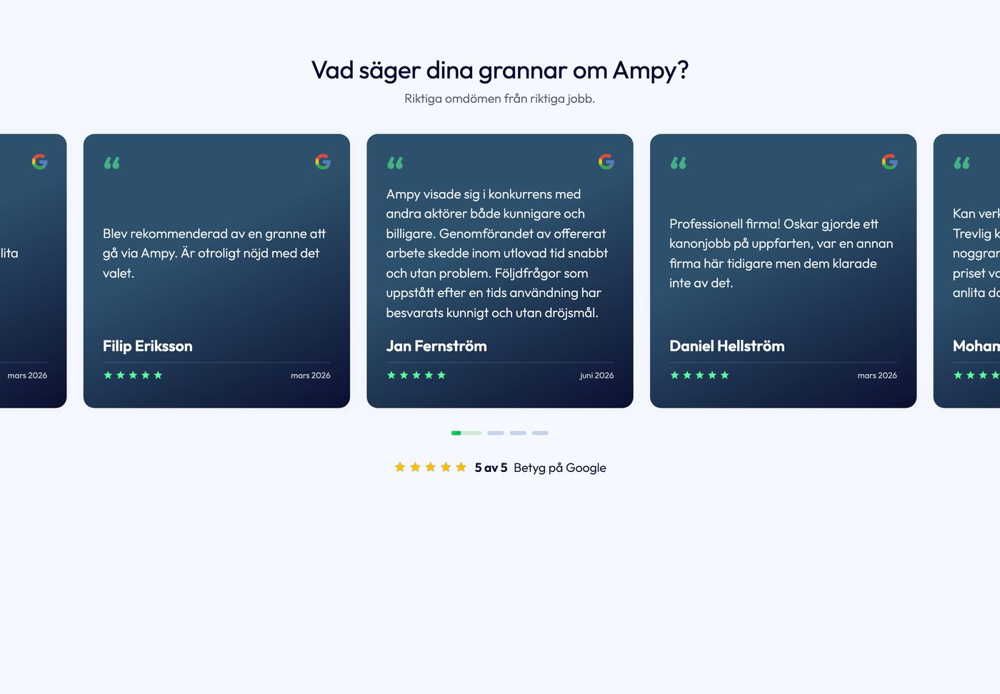
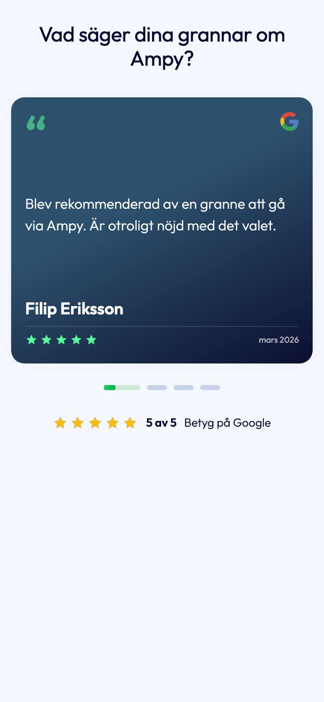
Certifikat-band
Tillitsbandet under innehållet: gradientyta med tre vågor, rubrik och brödtext till vänster, fyra vita märkeskort i 2 x 2 till höger. Logotyperna är normaliserade på optisk bläckmassa, inte på boxhöjd.
Kanon: certificates (delivery/dist/ampy-certificates.css, v2, auktoritet 2, paritet 24 av 24 bredder). Finns även i: live-baslinjen (sex kort 113 x 90 utan skugga, klippt våg). Blockbiblioteket


Källans copy "Över 3000 gånger om året" är [GAP] mot ampy-foretagsdata och utbytt här. Under 900 px vrids gradienten så ljusänden hamnar bakom korten, inte bakom texten (brödtext 2,47 till 8,45:1).
Anatomi
| Del | 1440 | 390 | Token |
|---|---|---|---|
| Band | 354 px hög (låst), padding 56, 90deg navy till sekundärteal | padding 79 / 56, 180deg | --ampy-space-xl, --ampy-bg-dark, --apsecondary-teal |
| Rubrik | 36 px / 500 / 1.2 vit | 26,8 px centrerad | --ampy-text-h2 |
| Text | 18 px / 300 / 1.55, 48ch | 16,1 / 1.6, 34ch | --ampy-text-body |
| Märkeskort | 236 x 113, padding 16 / 18, radie 20 | 160 x 96, radie 16,3 | --ampy-radius-card |
| Grid | 2 x 2, max 492, gap 19,8 / 16 | samma, centrerad | --ampy-space-s |
| Logotyphöjd | IN 35, ESV 70, ID06 43, TH 28 | 25 / 56 / 30 / 20 | per märke |
- Normalisera logotyper på synlig bläckmassa: beskär viewBox till bläckrutan och sätt höjd per märke.
- Kolumngap minst lika stort som hörnradien, annars läses kanalen mellan korten timglasformad.
- Tvåtonsring vid fokus (vit + navy): minst en av tonerna har 3:1 mot gradienten överallt.
- Ingen vit text på sekundärtealen i den ljusa änden (2,47:1). Vrid gradienten eller ge texten midnight bakom sig.
- Ingen våg som bild med object-fit cover: den klipps. Inline-SVG med preserveAspectRatio none.
- Ingen hover på pekskärm: hover fastnar efter tap när kortet öppnar ny flik.
Kod
<section class="ampy-cert ampy-on-dark" aria-labelledby="cert-h">
<div class="ampy-cert__bg" aria-hidden="true">
<svg viewBox="0 0 1440 356" preserveAspectRatio="none" xmlns="http://www.w3.org/2000/svg" focusable="false">
<defs>
<linearGradient id="cert-g1" x1="1440" y1="60" x2="120" y2="360" gradientUnits="userSpaceOnUse"><stop offset="0" stop-color="#b6f2ff" stop-opacity=".30"/><stop offset="1" stop-color="#b6f2ff" stop-opacity="0"/></linearGradient>
<linearGradient id="cert-g2" x1="1440" y1="120" x2="180" y2="410" gradientUnits="userSpaceOnUse"><stop offset="0" stop-color="#ffffff" stop-opacity=".26"/><stop offset="1" stop-color="#ffffff" stop-opacity="0"/></linearGradient>
<linearGradient id="cert-g3" x1="1440" y1="210" x2="260" y2="450" gradientUnits="userSpaceOnUse"><stop offset="0" stop-color="#8fd4e0" stop-opacity=".44"/><stop offset="1" stop-color="#8fd4e0" stop-opacity="0"/></linearGradient>
</defs>
<path d="M0,356 L0,224 C268,190 452,258 712,226 C972,194 1196,132 1440,100 L1440,356 Z" fill="url(#cert-g1)"/>
<path d="M0,356 L0,286 C288,256 492,322 748,286 C1004,250 1216,196 1440,166 L1440,356 Z" fill="url(#cert-g2)"/>
<path d="M0,356 L0,338 C308,318 528,362 788,330 C1048,298 1236,266 1440,244 L1440,356 Z" fill="url(#cert-g3)"/>
</svg>
</div>
<div class="ampy-cert__glow" aria-hidden="true"></div>
<div class="ampy-cert__inner">
<div class="ampy-cert__intro">
<h2 class="ampy-cert__heading" id="cert-h">Behörigheten bakom varje jobb</h2>
<p class="ampy-cert__text">Varje gång en av våra elektriker ringer på en dörr är det med legitimation och försäkring i ryggen.</p>
</div>
<ul class="ampy-cert__marks" role="list">
<li><a class="ampy-cert__mark ampy-cert__mark--in" href="#" aria-label="Installatörsföretagen. Ampy är medlem."><img src="../bilder/block/cert-in.svg" alt="" width="719" height="188"></a></li>
<li><a class="ampy-cert__mark ampy-cert__mark--esv" href="#" aria-label="Elsäkerhetsverket. Ampy är registrerat elinstallationsföretag."><img src="../bilder/block/cert-esv.svg" alt="" width="105" height="93"></a></li>
<li><a class="ampy-cert__mark ampy-cert__mark--id06" href="#" aria-label="ID06."><img src="../bilder/block/cert-id06.svg" alt="" width="300" height="112"></a></li>
<li><a class="ampy-cert__mark ampy-cert__mark--th" href="#" aria-label="Trygg-Hansa. Ansvarsförsäkring."><img src="../bilder/block/cert-th.svg" alt="" width="1000" height="194"></a></li>
</ul>
</div>
</section>
Avvikelser i klonen
- Gradienten navy till #5eb1bf är klonad ordagrant via
--apsecondary-teal. Beslut B16 säger att bandet behöver mörkare slut eller midnight-yta bakom texten; det är inte gjort i klonen. - Rubrikvikt 400 blir 500 (B17). Vågtonen #8fd4e0 saknar token (dekor).
- Kortets tre-lagers skugga med inset-hårlinje saknar token och står som literal (enda blocket med inset-hårlinje).
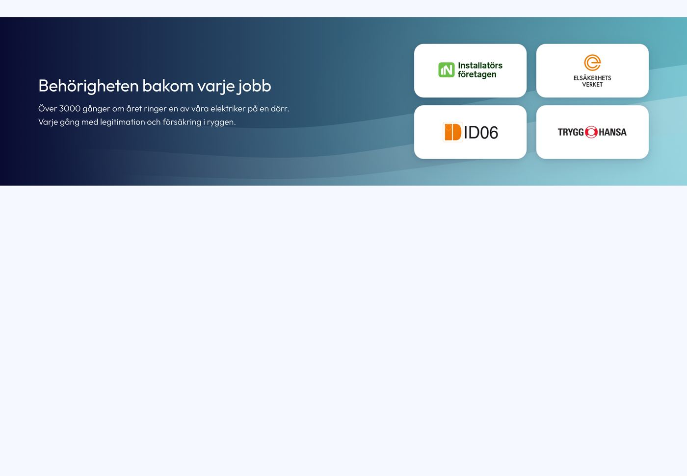
Eljour: symptomlista, samtalskort och nödknapp
Toppblocket på eljour-sidorna. Besökaren trycker på symptomet, får en ärlig riskförklaring och ett samtal till jouren. Inget formulär. Samtalskortet till vänster (status, löfte, fyra trust-punkter, CTA), symptomlistan till höger med två nivåer: Akut och Varning.
Kanon: eljour-block (index.html:12-140, "sajtens bästa block 23/25", auktoritet 1). Finns även i: eljour-sticky-bar (gör samtalskortet sticky från 993 px, grön fork av knappen), hero-2 E (ampy-btn--emergency, samma gradient). Statuspill = S2:s .ampy-tag--live, trust-listan = .ampy-list--check.ampy-list--compact. Blockbiblioteket
Är något fel med elen?Tryck på det du upplever.
-
Bränd lukt från ett uttag, en dosa eller elcentralen betyder oftast att något värms upp av ett glapp. Värmen kan tända plasten runt kabeln långt innan säkringen reagerar.
Ser du rök eller lågor: ring 112 först. Bryt strömmen i elcentralen om du kan göra det säkert.
-
Löser en säkring ut en enstaka gång är det oftast bara överbelastning. Löser samma säkring ut gång på gång är det en kortslutning eller ett glapp.
-
Jordfelsbrytaren bryter så fort den känner läckström. Den bryter för att skydda dig, så strunta inte i den.
-
En laddbox som blir varm att ta på drar mer ström än anslutningen är byggd för.
Varje år rycker räddningstjänsten ut till omkring 1 800 elrelaterade bränder i svenska bostäder. Källa: Elsäkerhetsverket.
Första raden visas öppen. Stängda paneler är inert. Ackordeonet är grid-rows 0fr till 1fr, aldrig height. Fakta om 1 800 bränder bär källa i raden (Elsäkerhetsverket); det är blockets enda siffra.
Anatomi
| Del | 1440 | 390 | Token |
|---|---|---|---|
| Rubrik (delad) | 36 px / 500 / 1.15 / -.015em, 30ch, centrerad | 26 px | --ampy-text-h2 |
| Grid | 4fr / 6fr = 496 + 744, gap 40 | staplat, listan 20 px margin | egen (cqi saknas i källan) |
| Samtalskort | padding 28, gap 16, radie 20, ram + skugga | padding 20 | --ampy-radius-card, --ampy-shadow-card |
| Statuspill | 13 / 600, puls 9 px | centrerad | .ampy-tag--live |
| Nödknapp | 58 h, radie 14, 17,5 / 600 vit, 146deg grön | 15 px, puls under kanten | .ampy-btn--emergency (B6) |
| Symptomrad | 68 h, prick 10, etikett 19 / 500, tagg 12 / 600, chevron 22 | 60 h, 17 px | .ampy-tag--sm |
| Panel | risktext 17 / 400 / 1.6 62ch, säkerhetsruta radie 10 | samma | --ampy-error(-tint) |
| "Se fler" | 55 h, 15 / 600 grön | samma | --ampy-success-ink |
- Låt varje panel sluta i samtalet, och 112/1177 före oss där det gäller liv.
- Samtalskortets ordning: status, löfte, fyra konkreta trust-punkter, CTA, källa direkt under.
- En öppen panel åt gången, stängda paneler
inert, fokusring på allt.
- Ingen puls på desktop-knappen: den skulle dubblera pulsen i "Jour öppen just nu".
- Inga två gröna knappar i samma viewport: sticky-baren bär ring-knappen (kanon), inte nödknappen.
- Inget "Jour öppen just nu" utan att bemanningen är verifierad ([GAP-1] i sticky-barens leverans).
Kod
<section class="ampy-eljour ampy-band" aria-labelledby="ej-title">
<header class="ampy-eljour__head">
<h2 class="ampy-eljour__title" id="ej-title"><span>Är något fel med elen?</span><span>Tryck på det du upplever.</span></h2>
</header>
<div class="ampy-eljour__grid">
<aside class="ampy-eljour__aside">
<div class="ampy-callcard">
<span class="ampy-tag ampy-tag--live" style="align-self:flex-start"><span class="ampy-tag__pulse" aria-hidden="true"></span> Jour öppen just nu</span>
<p class="ampy-callcard__lead"><b>Akut elfel? Ring oss direkt.</b> Då slipper du felsöka själv, och vi gör elen trygg att använda igen.</p>
<ul class="ampy-list ampy-list--check ampy-list--compact">
<li><svg aria-hidden="true"><use href="../../system/ikoner.svg#ik-clock"/></svg> Jour dygnet runt, året om.</li>
<li><svg aria-hidden="true"><use href="../../system/ikoner.svg#ik-map-pin"/></svg> Målsättning att vara på plats inom en timme.</li>
<li><svg aria-hidden="true"><use href="../../system/ikoner.svg#ik-check-circle"/></svg> Prata med en av våra behöriga elektriker, inte en växel.</li>
<li><svg aria-hidden="true"><use href="../../system/ikoner.svg#ik-lock"/></svg> Tydligt pris innan vi rycker ut, inga dolda avgifter.</li>
</ul>
<a class="ampy-btn ampy-btn--emergency" href="tel:+46102657979"><span class="ampy-btn__txt">Ring eljouren <b>010-265 79 79</b></span><span class="ampy-btn__dot" aria-hidden="true"></span><svg class="ampy-btn__icon" aria-hidden="true"><use href="../../system/ikoner.svg#ik-phone"/></svg></a>
</div>
<p class="ampy-eljour__ground ampy-eljour__ground--d">Varje år rycker räddningstjänsten ut till omkring <b>1 800 elrelaterade bränder</b> i svenska bostäder. En vanlig orsak är en glappkontakt som hettas upp. Källa: Elsäkerhetsverket.</p>
</aside>
<ul class="ampy-symptoms" id="ej-list">
<li class="ampy-symptoms__item">
<button class="ampy-symptoms__row" type="button" aria-expanded="true" aria-controls="ej-p1"><span class="ampy-symptoms__dot ampy-symptoms__dot--akut" aria-hidden="true"></span><span class="ampy-symptoms__label">Det luktar bränt</span><span class="ampy-tag ampy-tag--sm ampy-tag--error">Akut</span><svg class="ampy-symptoms__chev" aria-hidden="true"><use href="../../system/ikoner.svg#ik-chevron-down"/></svg></button>
<div class="ampy-symptoms__panel" id="ej-p1"><div class="ampy-symptoms__panel-in"><div class="ampy-symptoms__panel-pad">
<p class="ampy-symptoms__risk">Bränd lukt från ett uttag, en dosa eller elcentralen betyder oftast att något <b>värms upp av ett glapp</b>. Värmen kan tända plasten runt kabeln långt innan säkringen reagerar.</p>
<p class="ampy-symptoms__safety"><svg aria-hidden="true"><use href="../../system/ikoner.svg#ik-warning"/></svg><span>Ser du rök eller lågor: ring <a href="tel:112">112</a> först. Bryt strömmen i elcentralen om du kan göra det säkert.</span></p>
<div class="ampy-symptoms__act"><a class="ampy-btn ampy-btn--emergency" href="tel:+46102657979"><span class="ampy-btn__txt">Ring eljouren <b>010-265 79 79</b></span><svg class="ampy-btn__icon" aria-hidden="true"><use href="../../system/ikoner.svg#ik-phone"/></svg></a></div>
</div></div></div>
</li>
<li class="ampy-symptoms__item">
<button class="ampy-symptoms__row" type="button" aria-expanded="false" aria-controls="ej-p2"><span class="ampy-symptoms__dot ampy-symptoms__dot--varn" aria-hidden="true"></span><span class="ampy-symptoms__label">Säkring löser ut</span><span class="ampy-tag ampy-tag--sm ampy-tag--warning">Varning</span><svg class="ampy-symptoms__chev" aria-hidden="true"><use href="../../system/ikoner.svg#ik-chevron-down"/></svg></button>
<div class="ampy-symptoms__panel" id="ej-p2" inert><div class="ampy-symptoms__panel-in"><div class="ampy-symptoms__panel-pad"><p class="ampy-symptoms__risk">Löser en säkring ut en enstaka gång är det oftast bara överbelastning. Löser samma säkring ut gång på gång är det en <b>kortslutning eller ett glapp</b>.</p></div></div></div>
</li>
<li class="ampy-symptoms__item">
<button class="ampy-symptoms__row" type="button" aria-expanded="false" aria-controls="ej-p3"><span class="ampy-symptoms__dot ampy-symptoms__dot--varn" aria-hidden="true"></span><span class="ampy-symptoms__label">Jordfelsbrytare löser ut</span><span class="ampy-tag ampy-tag--sm ampy-tag--warning">Varning</span><svg class="ampy-symptoms__chev" aria-hidden="true"><use href="../../system/ikoner.svg#ik-chevron-down"/></svg></button>
<div class="ampy-symptoms__panel" id="ej-p3" inert><div class="ampy-symptoms__panel-in"><div class="ampy-symptoms__panel-pad"><p class="ampy-symptoms__risk">Jordfelsbrytaren bryter så fort den känner <b>läckström</b>. Den bryter för att skydda dig, så strunta inte i den.</p></div></div></div>
</li>
<li class="ampy-symptoms__item">
<button class="ampy-symptoms__row" type="button" aria-expanded="false" aria-controls="ej-p4"><span class="ampy-symptoms__dot ampy-symptoms__dot--akut" aria-hidden="true"></span><span class="ampy-symptoms__label">Laddboxen blir varm</span><span class="ampy-tag ampy-tag--sm ampy-tag--error">Akut</span><svg class="ampy-symptoms__chev" aria-hidden="true"><use href="../../system/ikoner.svg#ik-chevron-down"/></svg></button>
<div class="ampy-symptoms__panel" id="ej-p4" inert><div class="ampy-symptoms__panel-in"><div class="ampy-symptoms__panel-pad"><p class="ampy-symptoms__risk">En laddbox som blir varm att ta på drar mer ström än anslutningen är byggd för.</p></div></div></div>
</li>
<li class="ampy-symptoms__more-li"><button class="ampy-symptoms__more" type="button" aria-expanded="false">Se fler tecken (6) <svg aria-hidden="true"><use href="../../system/ikoner.svg#ik-chevron-down"/></svg></button></li>
</ul>
<p class="ampy-eljour__ground ampy-eljour__ground--m">Varje år rycker räddningstjänsten ut till omkring <b>1 800 elrelaterade bränder</b> i svenska bostäder. Källa: Elsäkerhetsverket.</p>
</div>
</section>
Avvikelser i klonen
- Nödknappens gradient 146deg #055a4b till #0a8169 (vit text 4,8:1) är klonad som komponent-egen literal; beslut B6 föreslår solid
--ampy-action-strong(variant.ampy-btn--solidfinns). Radie 14 blir 16 (B4). - Eljour-familjens bläck #3b3f59 (
--apnavy-ink) blir--ampy-ink-body(midnight, B3) i risktext och lead; kortets ram #e6ecf6 blir--ampy-line. - Prickarnas färger #e24b4a och #e3a008 står som literaler (prick, inte text); taggarna använder
--ampy-error/-warn-paren. - Hover-ytorna #fafcff och #fbfdff saknar token (subtle = sky-mist #f5f9ff är mörkare).

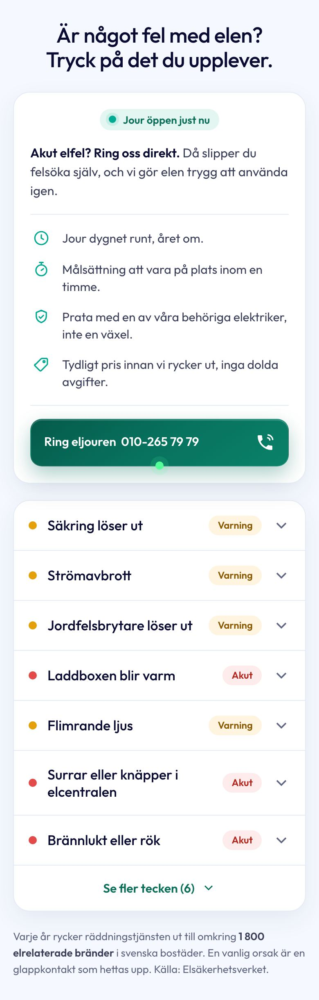
Sticky call-bar (mobil) och hörnkort (desktop)
Den persistenta ring-affordansen på eljour-ytan: en fixed bottenremsa upp till 992 px med sajtens ring-knapp i fullbreddsläge, och ett 216 x 128-hörnkort från 993 px som alltid syns. Baren uppfinner ingenting: pillen är samplad ur ring-knappen.
Kanon: eljour-sticky-bar (dist/ampy-callbar.css, M1 ring låst, auktoritet 2, hörnval öppet). Finns även i: elcentral-kollen __stickycta (77 h vit hylla med kortets solid-CTA, auto-döljs). Knappen = S2:s .ampy-btn--ring.ampy-btn--block. Blockbiblioteket
Prata med en expert
Ring eljouren010-265 79 79Båda visas i flödet här (--demo). I produktion är baren position: fixed med body.ampy-callbar-host som får 83 px bottenpadding server-side (CLS 0), och hörnkortet fixed 24 px från nedre högra hörnet.
Anatomi
| Del | Värde | Token |
|---|---|---|
| Bar | 83 h = 1 hårlinje + 8 + 58 pill + 16 (safe-area), vit krom, lyft 0 -4px 20px .10, z 900 | --ampy-line, --ampy-bg-surface |
| Pill | 366 x 58, radie 16, chip 36 höger, 16 / 500 + nummer 600 tabular | .ampy-btn--ring |
| Tap-centrum | 45 px från underkanten (kravet, vann över "74 totalt") | namngiven avvikelse i källan |
| Inträde | translateY 110 procent till 0 på 180 ms, 400 ms kall period, 0 ms reträtt vid tangentbord | --ampy-ease-out |
| Hörnkort | 216 x 128 (pixellåst), padding 14 / 16 / 19, radie 20, ram, kort + lyft-skugga | --ampy-shadow-card + --ampy-shadow-raised |
| Ledtext | 14 / 500 / lh 20 #3b3f59 | --apnavy-ink |
| Kortets pill | 182 x 58, verb 16 / 500 lh 18 + nummer 13 / 600 lh 16 | --ampy-fine |
- Sampla, designa inte: pillen ska mäta identiskt mot ring-knappen på samma sida.
- Printa body-paddingen server-side så inträdet aldrig ger layoutskift.
- Håll kortets höjd på hela pixlar (128,00): en bruten höjd på ett fixed lager ger suddiga kanter.
- Ingen translateY på hover på en bottenfäst remsa; hover är brightness/saturate.
- Ingen mint-prick på ring-ytan (1,06:1 mot crystal-blue): ampyRing-pulsen är livstecknet.
- Aldrig rem i baren: temat kör 62,5 procent och en rem-bar renderas 37,5 procent för liten.
Kod
<div class="ampy-callbar ampy-callbar--demo">
<a class="ampy-btn ampy-btn--ring ampy-btn--block" href="tel:+46102657979"><span class="ampy-btn__chip" aria-hidden="true"><svg><use href="../../system/ikoner.svg#ik-phone"/></svg></span><span class="ampy-btn__txt">Ring eljouren <b>010-265 79 79</b></span></a>
</div>
Avvikelser i klonen
- Barens hårlinje #e6ecf6 blir
--ampy-line; lyftskuggan (uppåtriktad) saknar token och står som literal. - Hörnkortets lyft .16 blir
--ampy-shadow-raised(.14). Ledtextens #3b3f59 behålls via--apnavy-ink(10,3:1). - Forkarnas fallback-drift (radie 14 till 12, text 15 till 14) ärvs inte: klonen sätter 16/16 explicit som ring-varianten.
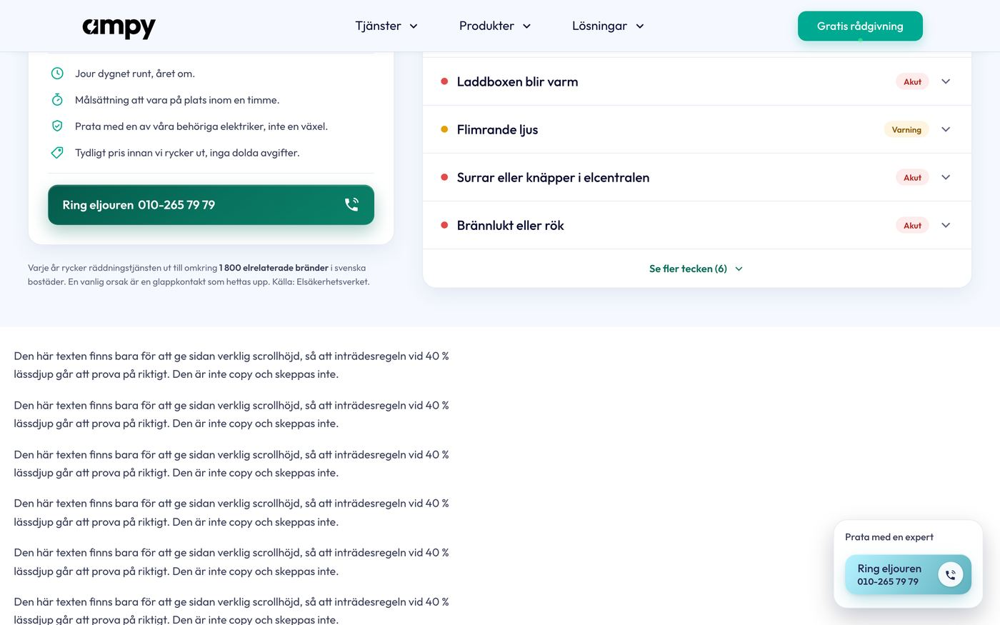

CTA-band "Prata med en elektriker"
Det primära ring-bandet: vitt kort på sky-mist med rubrik, brödtext, EN ring-CTA med puls-chip och Edvins porträtt. Ett konverteringsmål (samtalet), inget formulär, ingen sekundär knapp.
Kanon: main-cta (delivery/ampy-main-cta.css, version B låst, auktoritet 2). Finns även i: picasso components/main-cta (baslinjeklon + tre riktningar), Main-CTA-block (spegel, överspelad). Knappen = S2:s .ampy-btn--ring. Blockbiblioteket
Prata med en elektriker direkt på telefon
Känn dig trygg med kunnig hjälp, precis när du behöver den. Prata direkt med en erfaren elektriker som lyssnar på ditt behov och guidar dig till en säker, smidig lösning.

Källans rubrik "inom 60 sekunder!" är ett operativt löfte utan verifiering ([GAP]) och dessutom bannlyst av candour-grinden ("inom 60 sekunder" = konkurrentmönster). Klonen bär en accent utan löfte. Blocket bryter mot sin egen bredd (container query), inte viewporten.
Anatomi
| Del | 1440 | 390 | Token |
|---|---|---|---|
| Sektion | padding 56 / 40 sky-mist | 28 / 16 | --ampy-bg-page |
| Kort | 1280 x 458, radie 20, padding 48 / 72, grid 1fr + 400, gap 48 | 20 / 20 / 28, bild överst | --ampy-radius-card, --ampy-shadow-card |
| Rubrik | 40 px / 500 / 1.1 midnight | 24 px centrerad | --ampy-text-h2 (36) |
| Accent | text-teal 5,27:1 | samma | --ampy-action-strong |
| Brödtext | 18 px / 300 / 1.6, 52ch | 16,1 px centrerad | --ampy-text-body |
| Ring-CTA | 228 x 58, chip vänster | full bredd, chip höger (row-reverse) | .ampy-btn--ring |
| Porträtt | 320 x 366, radie 20, ljusring 1 px vit .55, skugga 0 18px 40px -20px .26 | 292 x 335 | --ampy-shadow-photo |
- Ett mål: betygsraden togs bort för att den konkurrerade. Blocket har en enda interaktiv yta.
- Porträttets ljusring som border (inset-skugga renderas inte på img) och riktad midnattsskugga med negativ spread.
- Bryt mot containerns bredd så blocket fungerar i en smal Bricks-kolumn.
- Ingen gradienttext i rubriken (källans "inom 60 sekunder!" mätte ~2:1; gradienttext är drift enligt ägardirektivet).
- Inga tidslöften i rubriken ("inom 60 sekunder", "på 30 sek").
- Ingen andra knapp och inget formulär bredvid samtalet.
Kod
<section class="ampy-ctaband">
<div class="ampy-ctaband__card">
<img class="ampy-ctaband__bgwave" src="../bilder/block/cta-bgwave.svg" alt="" aria-hidden="true" width="652" height="273">
<div class="ampy-ctaband__text">
<h2 class="ampy-ctaband__h">Prata med en elektriker <span class="ampy-ctaband__accent">direkt på telefon</span></h2>
<p class="ampy-ctaband__p">Känn dig trygg med kunnig hjälp, precis när du behöver den. Prata direkt med en erfaren elektriker som lyssnar på ditt behov och guidar dig till en säker, smidig lösning.</p>
<div class="ampy-ctaband__action">
<a class="ampy-btn ampy-btn--ring" href="tel:+46102657979"><span class="ampy-btn__chip" aria-hidden="true"><svg><use href="../../system/ikoner.svg#ik-phone"/></svg></span>Ring 010-265 79 79</a>
</div>
</div>
<figure class="ampy-ctaband__media">
<img class="ampy-ctaband__photo" src="../bilder/block/edvin.webp" alt="Edvin, elektriker på Ampy" width="933" height="1400">
<img class="ampy-ctaband__wave" src="../bilder/block/cta-overlay.svg" alt="" aria-hidden="true" width="277" height="100">
</figure>
</div>
</section>
Avvikelser i klonen
- Gradient-spannet (hsl(171 95 41) till hsl(189 43 56), ägaraccepterad ~2:1) är ersatt med text-teal
--ampy-action-strong. Det är en medveten avvikelse: designsystemet ska själv klara ribban. - Rubriken 40/500 blir
--ampy-text-h236 (B17); midnight-varianten #090c34 blir--ampy-ink; brödtextens #363636 blir--ampy-ink-body. - Husets skugga 0 0 16px rgba(190,190,190,.4) blir
--ampy-shadow-card(B10).


Header och mega-meny
Sajtens header v5: en 76 px bar i sidans egen färg med hårlinje under, logo 130, tre nav-länkar centrerade, solid teal-CTA med pulserande mint-prick. Öppen mega-meny är ett fullbredds-ark i samma färg (bar och ark läses som en yta, sömmen försvinner). Här visas skalet med Tjänster öppen; Produkter, Lösningar och mobil-drawern visas som bild.
Kanon: website-blocks (Header/index.html:20-140, header godkänd, auktoritet 1; CSS:en är tecken-identisk med hero-1 assets/header.css). Finns även i: article SiteNav (egen React-kopia med topbar 36 + neonmint-pill = drift). CTA = S2:s .ampy-btn--secondary.ampy-btn--compact. Blockbiblioteket
Kolumnikonerna är källans SVG-ikoner (Shovel, light-bulb, window) ersatta med sprite-ikoner: källan laddar dem från ampy.se. Skalet är statiskt; källans JS (timers, hover-gating, Escape, focus-return) följer inte med.
Anatomi
| Del | 1440 | 390 | Token |
|---|---|---|---|
| Bar | 76 h, container 1280, wrap 28, hårlinje #dbe4f0 + 0 4px 14px -10px .14 | 66 h, wrap 16 | --ampy-bg-page, --ampy-container |
| Logo | 130 px | 100 px (84 under 375) | brand |
| Nav-länk | 18 / 500 ink, padding 0 26, hover teal-tint .09 + 2 px underline | dold (drawer) | --ampy-text-body, --ampy-action |
| CTA | 48 h, radie 15, 16 / 600 vit på teal + prick 10 mint puls 1,6 s | 42 h, 15 px | .ampy-btn--secondary (teal-deep, B5), radie 16 (B4) |
| Mega-ark | padding 36 / 28, fyra kolumner delade av 1 px, skugga 0 22px 36px -28px .20 | en kolumn | --ampy-line |
| Kolumntitel / länk | 18 / 600 ikon 22; 15,5 / 400 dämpad, padding 7 / 11, radie 8 | samma | --ampy-ink-muted, --ampy-radius-small |
- Bar och ark i samma färg med hårlinje; sömmen bort när arket är öppet.
- Pulsprickens ring är sajtens enda "levande" detalj i headern; hover på CTA:n utan rörelse är ett medvetet val.
- aria-expanded/controls, Escape, focus-return och hover-gating (hover:hover and pointer:fine).
- Ingen tredje primärknapp: header-CTA, hero-CTA och drawer-CTA ska dela ett knappspråk.
- Ingen scroll-tighten som README lovar men koden saknar (76 px före och efter scroll).
- Inga Google Fonts (prototypen laddar Outfit externt, leveransen self-hostar).
Kod
<header class="ampy-header ampy-header--demo is-open">
<div class="ampy-header__in">
<a class="ampy-header__logo" href="#" aria-label="Ampy, hem"><img src="../brand/ampy-wordmark-midnight-701x201.png" alt="Ampy" width="130" height="37"></a>
<nav class="ampy-header__nav" aria-label="Huvudmeny">
<div class="ampy-header__item is-open"><button class="ampy-header__link" type="button" aria-expanded="true" aria-controls="mega-tj">Tjänster <svg class="ampy-header__chev" aria-hidden="true"><use href="../../system/ikoner.svg#ik-chevron-down"/></svg></button></div>
<div class="ampy-header__item"><button class="ampy-header__link" type="button" aria-expanded="false">Produkter <svg class="ampy-header__chev" aria-hidden="true"><use href="../../system/ikoner.svg#ik-chevron-down"/></svg></button></div>
<div class="ampy-header__item"><button class="ampy-header__link" type="button" aria-expanded="false">Lösningar <svg class="ampy-header__chev" aria-hidden="true"><use href="../../system/ikoner.svg#ik-chevron-down"/></svg></button></div>
</nav>
<div class="ampy-header__right">
<a class="ampy-btn ampy-btn--secondary ampy-btn--compact ampy-header__cta" href="#">Gratis rådgivning</a>
<button class="ampy-header__burger" type="button" aria-label="Öppna meny" aria-expanded="false"><span></span><span></span><span></span></button>
</div>
</div>
</header>
<div class="ampy-mega ampy-mega--demo" id="mega-tj">
<div class="ampy-mega__in">
<div class="ampy-mega__col">
<a class="ampy-mega__title" href="#"><svg aria-hidden="true"><use href="../../system/ikoner.svg#ik-bolt"/></svg>Elinstallationer</a>
<a class="ampy-mega__item" href="#">Byte av elcentral</a><a class="ampy-mega__item" href="#">Elbesiktning</a><a class="ampy-mega__item" href="#">Felsökning av el</a><a class="ampy-mega__item" href="#">Jordfelsbrytare</a><a class="ampy-mega__item" href="#">Lastbalansering</a><a class="ampy-mega__item" href="#">Smarta hem</a>
</div>
<div class="ampy-mega__col">
<a class="ampy-mega__title" href="#"><svg aria-hidden="true"><use href="../../system/ikoner.svg#ik-info"/></svg>Belysning</a>
<a class="ampy-mega__item" href="#">Inomhusbelysning</a><a class="ampy-mega__item" href="#">Utomhusbelysning</a><a class="ampy-mega__item" href="#">Installation av spotlights</a><a class="ampy-mega__item" href="#">Byte av strömbrytare</a><a class="ampy-mega__item" href="#">Byte av ljuskällor</a>
</div>
<div class="ampy-mega__col">
<a class="ampy-mega__title" href="#"><svg aria-hidden="true"><use href="../../system/ikoner.svg#ik-map-pin"/></svg>Kök och badrum</a>
<a class="ampy-mega__item" href="#">Installation av vitvaror</a><a class="ampy-mega__item" href="#">Ugn och spis</a><a class="ampy-mega__item" href="#">Golvvärme</a><a class="ampy-mega__item" href="#">Handdukstork</a>
</div>
<div class="ampy-mega__col">
<a class="ampy-mega__title" href="#"><svg aria-hidden="true"><use href="../../system/ikoner.svg#ik-clock"/></svg>Akut och service</a>
<a class="ampy-mega__item" href="#">Eljour dygnet runt</a><a class="ampy-mega__item" href="#">Elservice</a><a class="ampy-mega__item" href="#">Elrenovering</a><a class="ampy-mega__item" href="#">Elektriker nära dig</a>
</div>
</div>
</div>
Avvikelser i klonen
- CTA-ytan teal-core (2,96:1 med vit text) blir teal-deep via
.ampy-btn--secondary(B5); radie 15 blir 16 (B4). - Ink-skalan #0f123c / #565e82 / #6a7190 blir midnight /
--ampy-ink-muted/--ampy-ink-faint; mega-länkens hover-teal blir teal-deep som text. - Hårlinjen #dbe4f0 och barens skugga saknar token och står som komponent-egna literaler. Nav 18 px står kvar mot live-tokenen 14 (headern är auktoritet 1).
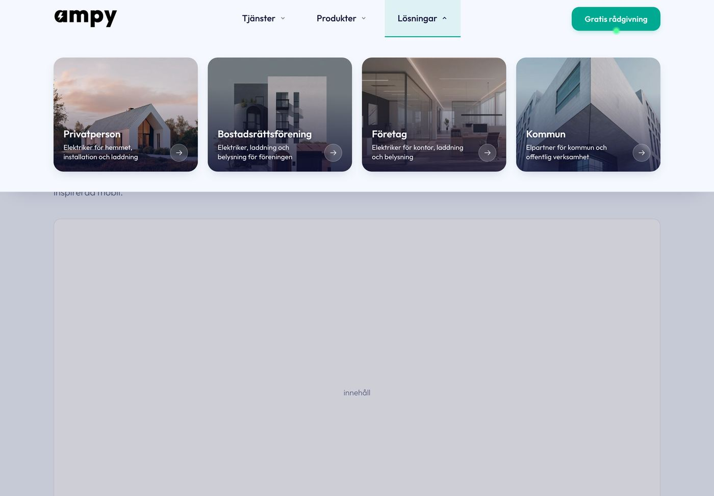

Footer
Sajtens footer i tre zoner: ljus prefooter "Populära kategorier" på en cyan-gradient, mörk footer med logo, brand-text, sociala ikoner, Google-betyg och tre länkkolumner, och en nästan svart bar med copyright och policy-länkar. Klonen är baslinjen (= live); riktning B (speglad meny) är rekommenderad men inte vald.
Kanon: footer-cro (css/baseline.css, 42 av 42 computed values identiska med live, auktoritet 1). Riktningar A, B, C (auktoritet 3) väntar ägarval. Blockbiblioteket
Adressen Hägersten mot Solna och "5,0" är [GAP] mot ampy-foretagsdata (candour-grind i källans ANALYS.md); taggen står i exemplet. Tre av källans fem sociala ikoner visas ur spriten (ik-linkedin, ik-instagram, ik-facebook; Reddit och TikTok utelämnade i skalet).
Anatomi
| Del | 1440 | 390 | Token |
|---|---|---|---|
| Prefooter | padding 56 / 39,6 / 39,6, gradient -51deg cyan | 27 / 21,5 | --ampy-space-xl/-l, --apcrystal-blue + två literaler |
| Prefooter h3 / h4 / länk | 32 / 600, 20 / 500, 16 / 300 | 24,5, 20, 14,1 | --ampy-text-h2 (36), -h3, -small |
| Footer | padding 79 / 39,6, -17deg #00011e till midnight, inset-skugga | 35 / 21,5 | --ampy-space-2xl, --ampy-bg-dark |
| Brand / kolumner | 30 procent + 60 procent, gap 60 / 50, kontakt 50 procent | 100 procent staplade | procent som live |
| Sociala | 20 px i 53,8 px-ankare (padding 9,9) | gap 28 | --ampy-space-2xs |
| Google-rad | G 29, "5,0" 16 / 700, stjärnor 18 guld | centrerad | --apgoogle-gold (B12) |
| Bar | 68 h, copyright 12, policy 14, gap 39,6 | 127 h, kolumn | --ampy-space-4xs/-s |
- Behåll exakt samma href-mängd i alla riktningar; telefonraden överst är redan ägargodkänd.
- Låt prefootern vara sajtens konsekventa användare av spacing- och texttokens rakt av.
- Sätt "© 2026 Ampy Nordic AB" utan "All Rights Reserved" (riktning B).
- Ingen Plus Jakarta Sans för "5.0" (källans enda PJS-förekomst, B7) och inga teal-stjärnor (B12).
- Ingen gradienttext i "konsultation!" (live har
gradientwhitegreen-text). - Ingen träffyta som styr kolumnhöjden av misstag (sociala ankarens padding gav 201 px).
Kod
<footer class="ampy-footer">
<section class="ampy-footer__pre">
<div class="ampy-footer__inner">
<h3 class="ampy-footer__pre-heading">Populära kategorier</h3>
<div class="ampy-footer__pre-grid">
<div class="ampy-footer__pre-block"><h4 class="ampy-footer__pre-h">Elinstallation</h4><ul class="ampy-footer__list"><li><a href="#">Eljour</a></li><li><a href="#">Elektriker</a></li><li><a href="#">Belysning</a></li></ul></div>
<div class="ampy-footer__pre-block"><h4 class="ampy-footer__pre-h">Laddboxar</h4><ul class="ampy-footer__list"><li><a href="#">Zaptec Go</a></li><li><a href="#">Zaptec Go 2</a></li><li><a href="#">Easee Charge up</a></li></ul></div>
<div class="ampy-footer__pre-block"><h4 class="ampy-footer__pre-h">Batterilagring</h4><ul class="ampy-footer__list"><li><a href="#">SAJ HS3</a></li><li><a href="#">SigenStor</a></li><li><a href="#">Dyness Stack100</a></li></ul></div>
<div class="ampy-footer__pre-block"><h4 class="ampy-footer__pre-h">Områden</h4><ul class="ampy-footer__list"><li><a href="#">Stockholm</a></li><li><a href="#">Sollentuna</a></li><li><a href="#">Haninge</a></li></ul></div>
<div class="ampy-footer__pre-block"><h4 class="ampy-footer__pre-h">Lösningar</h4><ul class="ampy-footer__list"><li><a href="#">Elektriker för företag</a></li><li><a href="#">Elektriker för restaurang</a></li><li><a href="#">Elektriker för bostadsrättsförening</a></li></ul></div>
</div>
</div>
</section>
<section class="ampy-footer__main ampy-on-dark">
<div class="ampy-footer__inner">
<div class="ampy-footer__brand">
<div class="ampy-footer__logo"><img src="../brand/ampy-wordmark-white-2917x834.png" width="130" height="37" alt="Ampy"></div>
<p class="ampy-footer__text">Framtidens elfirma för privatpersoner som värderar kvalitet, transparens och en elektriker som går extra milen för ditt hem.</p>
<div class="ampy-footer__social">
<a href="#" aria-label="LinkedIn"><svg viewBox="0 0 24 24" aria-hidden="true"><path d="M6.5 8.5h-3V21h3V8.5ZM5 3.5a1.75 1.75 0 1 0 0 3.5 1.75 1.75 0 0 0 0-3.5ZM21 13.4c0-3.4-1.8-5.2-4.4-5.2-1.9 0-2.9 1-3.4 1.8V8.5H10V21h3.2v-6.2c0-1.6.6-2.7 2-2.7 1.3 0 1.7 1 1.7 2.6V21H21v-7.6Z"/></svg></a>
<a href="#" aria-label="Instagram"><svg viewBox="0 0 24 24" aria-hidden="true"><path d="M12 3c2.4 0 2.7 0 3.7.1 2.6.1 4.1 1.6 4.2 4.2.1 1 .1 1.3.1 3.7s0 2.7-.1 3.7c-.1 2.6-1.6 4.1-4.2 4.2-1 .1-1.3.1-3.7.1s-2.7 0-3.7-.1c-2.6-.1-4.1-1.6-4.2-4.2C4 14.7 4 14.4 4 12s0-2.7.1-3.7C4.2 5.7 5.7 4.2 8.3 4.1 9.3 4 9.6 4 12 4Zm0 2c-2.4 0-2.6 0-3.6.1-1.6.1-2.3.8-2.4 2.4C6 8.4 6 8.6 6 11v2c0 2.4 0 2.6.1 3.6.1 1.6.8 2.3 2.4 2.4 1 .1 1.2.1 3.6.1s2.6 0 3.6-.1c1.6-.1 2.3-.8 2.4-2.4.1-1 .1-1.2.1-3.6v-2c0-2.4 0-2.6-.1-3.6-.1-1.6-.8-2.3-2.4-2.4C14.6 5 14.4 5 12 5Zm0 3.2a3.8 3.8 0 1 1 0 7.6 3.8 3.8 0 0 1 0-7.6Zm0 2a1.8 1.8 0 1 0 0 3.6 1.8 1.8 0 0 0 0-3.6Zm4-3.1a.9.9 0 1 1 0 1.8.9.9 0 0 1 0-1.8Z"/></svg></a>
<a href="#" aria-label="Facebook"><svg viewBox="0 0 24 24" aria-hidden="true"><path d="M13.5 21v-7h2.4l.4-3h-2.8V9.2c0-.9.3-1.4 1.5-1.4h1.4V5.1c-.3 0-1.1-.1-2.1-.1-2.2 0-3.7 1.3-3.7 3.8V11H8v3h2.6v7h2.9Z"/></svg></a>
</div>
</div>
<div class="ampy-footer__google">
<svg class="g" aria-hidden="true"><use href="../../system/ikoner.svg#ik-google"/></svg>
<span class="ampy-footer__rating">5,0</span>
<span class="ampy-footer__stars" role="img" aria-label="5 av 5 stjärnor"><svg><use href="../../system/ikoner.svg#ik-star"/></svg><svg><use href="../../system/ikoner.svg#ik-star"/></svg><svg><use href="../../system/ikoner.svg#ik-star"/></svg><svg><use href="../../system/ikoner.svg#ik-star"/></svg><svg><use href="../../system/ikoner.svg#ik-star"/></svg></span>
</div>
<div class="ampy-footer__cols">
<div class="ampy-footer__col"><h4 class="ampy-footer__h">Mer om Ampy</h4><ul class="ampy-footer__list"><li><a href="#">Om oss</a></li><li><a href="#">Jobba hos oss</a></li><li><a href="#">Nyheter och artiklar</a></li></ul></div>
<div class="ampy-footer__col"><h4 class="ampy-footer__h">Kundtjänst</h4><ul class="ampy-footer__list"><li><a href="#">Support</a></li><li><a href="#">ROT-avdrag 2026</a></li><li><a href="#">Grön teknik 2026</a></li></ul></div>
<div class="ampy-footer__col ampy-footer__col--contact"><h4 class="ampy-footer__h">Få en kostnadsfri konsultation</h4>
<div class="ampy-footer__contact">
<div class="ampy-footer__row"><svg aria-hidden="true"><use href="../../system/ikoner.svg#ik-map-pin"/></svg><p>Västbergavägen 25, 126 30 Hägersten</p></div>
<div class="ampy-footer__row"><svg aria-hidden="true"><use href="../../system/ikoner.svg#ik-mail"/></svg><p><a href="mailto:bokning@ampy.se">bokning@ampy.se</a></p></div>
<div class="ampy-footer__row"><svg aria-hidden="true"><use href="../../system/ikoner.svg#ik-phone"/></svg><p><a href="tel:+46102657979">010-265 79 79</a></p></div>
</div>
</div>
</div>
</div>
</section>
<section class="ampy-footer__bar ampy-on-dark">
<div class="ampy-footer__inner">
<span class="ampy-footer__copy">© 2026 Ampy Nordic AB</span>
<nav class="ampy-footer__policy" aria-label="Policy"><a href="#">Tillgänglighetsredogörelse</a><a href="#">Cookiepolicy</a><a href="#">Integritetspolicy</a></nav>
</div>
</section>
</footer>
Avvikelser i klonen
- Fyra nästan-navyer utan token (#00011e, #01021f, #010033, gradientens #70becb och #bbf5ff) står som komponent-egna literaler; midnight-slutet är
--ampy-bg-dark. - "5.0" i PJS 800 teal versal blir "5,0" i Outfit 700 vit; stjärnorna blir guld; prefooterns #1e1e1e / #363636 blir
--ampy-ink/--ampy-ink-body. - Prefooter-h3 32/600 blir h2-rollen 36/600 (B17); fasta 16 px och 14 px (brand-text, policy) blir
--ampy-text-small/--ampy-text-label. - Ikonfonter (Font Awesome) ersatta med inline-SVG som i källans klon.

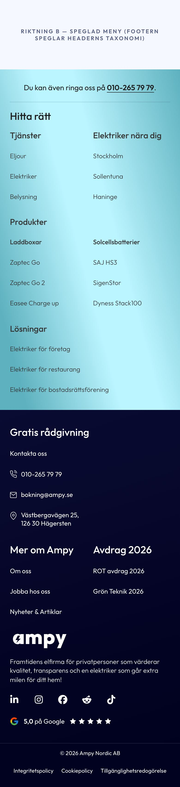
Hero-1 (startsidan)
Startsidans hero, riktning B: inramad foto-hero med midnattsblå veil från vänster, H1 60/700 vit på två rader, lead 22/400, gradient-CTA och proof-raden nere till höger. Ägargodkänd ("PERFEKTION") och installerad live.
Kanon: hero-1 (assets/style.css:40-60, 190-265, auktoritet 1). Finns även i: live site-css .home-hero__* (= Hero-1 installerad), picasso hero/ampy. Ramen = S2:s .ampy-frame (ytor.css); proof-raden = .ampy-proof (text.css). Blockbiblioteket
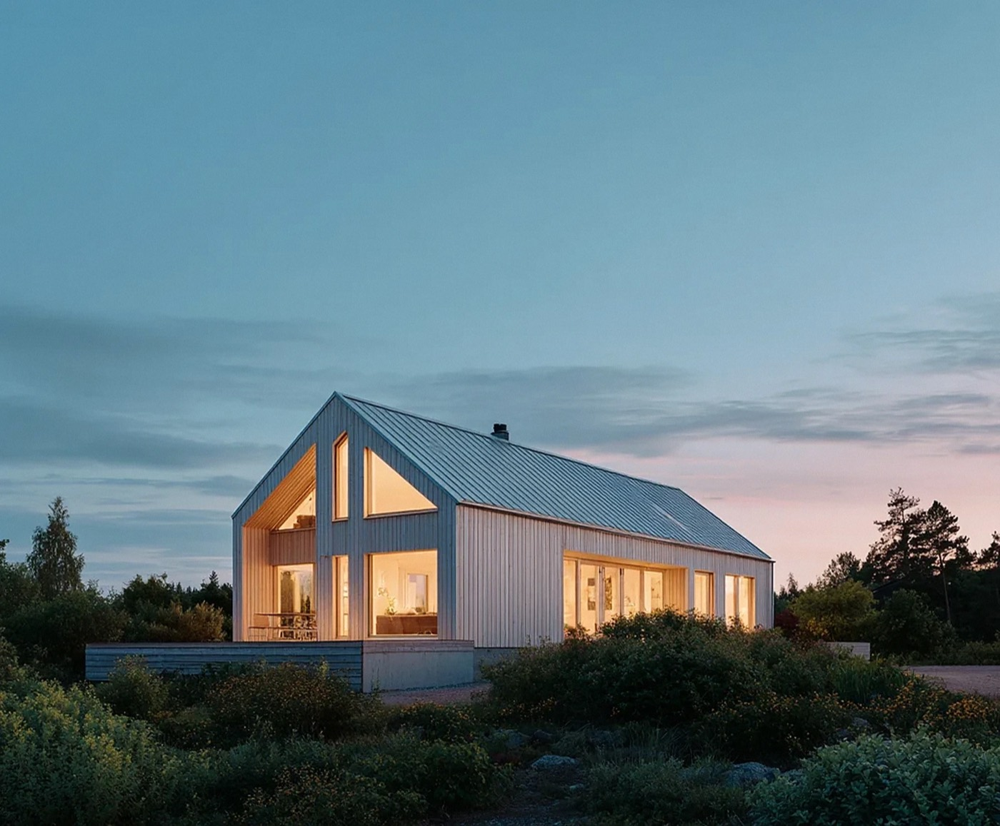
Elinstallationer i hemmet,
gjort ordentligt.
Våra egna behöriga elektriker hjälper dig i hela Sverige, med allt från elfel och elcentraler till laddbox och batterilagring.
Kostnadsfri rådgivningCopyn är källans ordagrant (kallor/Hero-1/index.html:268-269, ägargodkänd), rubrikrollen bärs av <p class="ampy-display"> så sidan har en enda h1. Ramen kör produktionens höjd (100svh minus header minus 48, 620 till 950 px) så kompositionen läses som källan. Proof-siffrorna "5,0" och "3 000" står som i källan men är [GAP] mot ampy-foretagsdata: taggen sitter i exemplet tills siffrorna är signerade.
Anatomi
| Del | 1440 | 390 | Token |
|---|---|---|---|
| Sektion | padding 20 / 26 / 30 sky-mist | 10 / 10 / 16 | literaler i källan |
| Ram | 1388 x 876 (max 1700), radie 22, foto 62 procent 60 procent | 370 x 752, radie 18 | .ampy-frame (radie card 20 = avvikelse) |
| Veil | 98deg .68 till .02 + 0deg .38 till 0 | 180deg nerifrån | --ampy-scrim-hero |
| H1 | 60 / 700 / 1.07 / -.018em vit, max 880 | 36 px, tre rader | --ampy-text-display |
| Lead | 22 / 400 / 1.58 vit .92, h1 till lead 18 | 15,5 px | --ampy-text-lead |
| CTA | 248 x 58, lead till CTA 32 | 226 x 52 | .ampy-btn--primary |
| Proof | 14,5 px vit, G 16, stjärnor 13,5, separator 1 x 15, nere höger | kolumn nere vänster | .ampy-proof |
- Två veil-lager: läsbar vit text utan att döda fotot; mobilen byter riktning (nerifrån).
- Radräkningen är verifierad per band: explicit radbrytning i H1 från 993 px, under det bryter texten fritt (källans
br { display: none }). - Hover bara på (hover:hover) and (pointer:fine); reduced-motion respekteras.
- Inga vita stjärnor längre: guld på alla ytor (V7-direktiv 2026-08-06, B12).
- Ingen andra hero-ram med annan skala (hero-2 kör 1424 / H1 48): två ramar på samma sajt är drift.
- Ingen proof-siffra utan [FACT]-källa.
Kod
<section class="ampy-hero1">
<div class="ampy-frame ampy-frame--short ampy-on-dark">
<img class="ampy-frame__media" src="../bilder/block/hero1-bg.jpg" alt="" width="1400" height="1157">
<div class="ampy-frame__veil" aria-hidden="true"></div>
<div class="ampy-frame__content ampy-hero1__stack">
<h1 class="ampy-display">Elektrikern som gör<br>ditt hem redo för framtiden</h1>
<p class="ampy-lead">Elservice, laddbox och batterilagring, utfört av behöriga elektriker med fast pris och ROT eller grön teknik inräknat.</p>
<a class="ampy-btn ampy-btn--primary" href="#">Kostnadsfri rådgivning <svg class="ampy-btn__icon" aria-hidden="true"><use href="../../system/ikoner.svg#ik-arrow-up-right"/></svg></a>
</div>
<div class="ampy-frame__foot">
<div class="ampy-proof">
<a class="ampy-proof__row" href="#"><svg class="ampy-proof__icon" aria-hidden="true"><use href="../../system/ikoner.svg#ik-google"/></svg><span class="ampy-proof__label"><strong>5,0</strong> på Google</span><span class="ampy-proof__stars" role="img" aria-label="5 av 5 stjärnor"><svg><use href="../../system/ikoner.svg#ik-star"/></svg><svg><use href="../../system/ikoner.svg#ik-star"/></svg><svg><use href="../../system/ikoner.svg#ik-star"/></svg><svg><use href="../../system/ikoner.svg#ik-star"/></svg><svg><use href="../../system/ikoner.svg#ik-star"/></svg></span></a>
<span class="ampy-proof__sep" aria-hidden="true"></span>
<span class="ampy-proof__vol">Över 3 000 installationer per år</span>
</div>
</div>
</div>
</section>
Avvikelser i klonen
- Ramradie 22 (18 mobil) behålls i
.ampy-hero1som överrid på S2:s.ampy-frame(card-token 20); källan är auktoritet 1. - Stjärnorna är guld (källan vita på foto), per B12 och V7-direktivet.
- CTA:ns navy-skugga (.40) blir bibliotekets gröna glöd via
--ampy-shadow-button; mobilskalningen 52 h / 15 px behålls som avvikelse mot CTA-kanon 58.
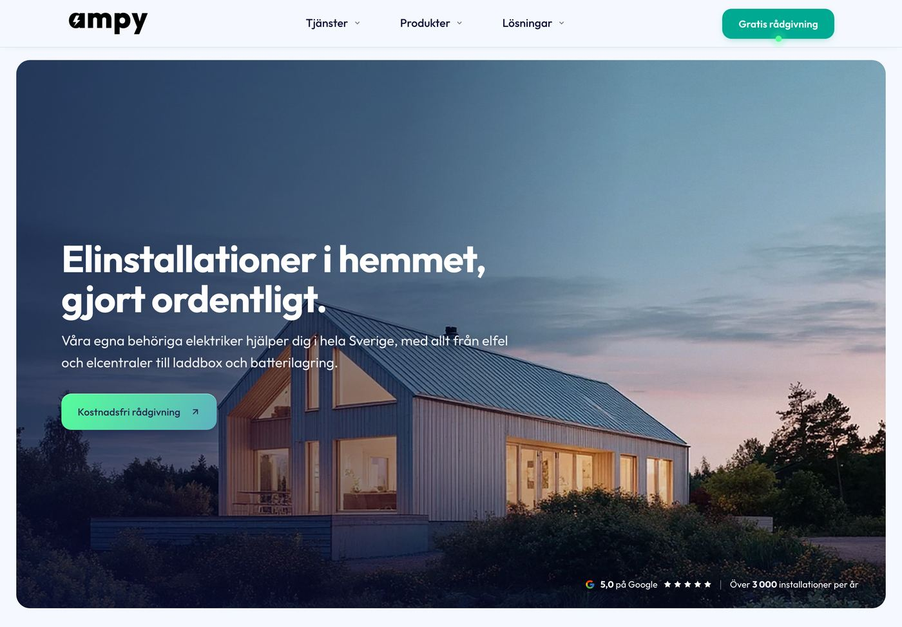
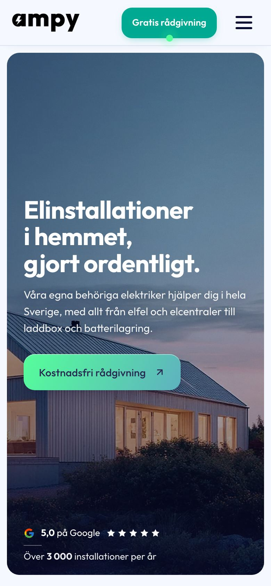
Hero-2 S/G/Z/E (tjänstesidor)
Herosystemet för 260 tjänste- och ortssidor: en navy-ram (radie 22, 1424 bred, 683 hög vid 1440) med breadcrumb, H1 48/700, lead 20, CTA och proof-rad. En hjälte per intent: S (tjänst, kvadratbild höger), G (ortsida laddbox, fullbredds-foto), Z (elektriker i ort, formkort), E (eljour, ring-CTA + vit sekundär). Här renderas S; de andra visas som bild.
Kanon: hero-2-alternatives (dist/ampy-hero-primitives.css + ampy-hero-s.css, v18 slutversion, auktoritet 2, lanseringsgrindar öppna). Finns även i: hero-2-form (formkortets föregångare, underkänd glas .76). Blockbiblioteket
Ny elcentral installerad med 30 % ROT-avdrag
Dags att byta ditt gamla proppskåp? Vi hjälper dig att uppgradera din elcentral till moderna automatsäkringar och kan även byta fasadmätarskåp för en säkrare och mer driftsäker elanläggning.
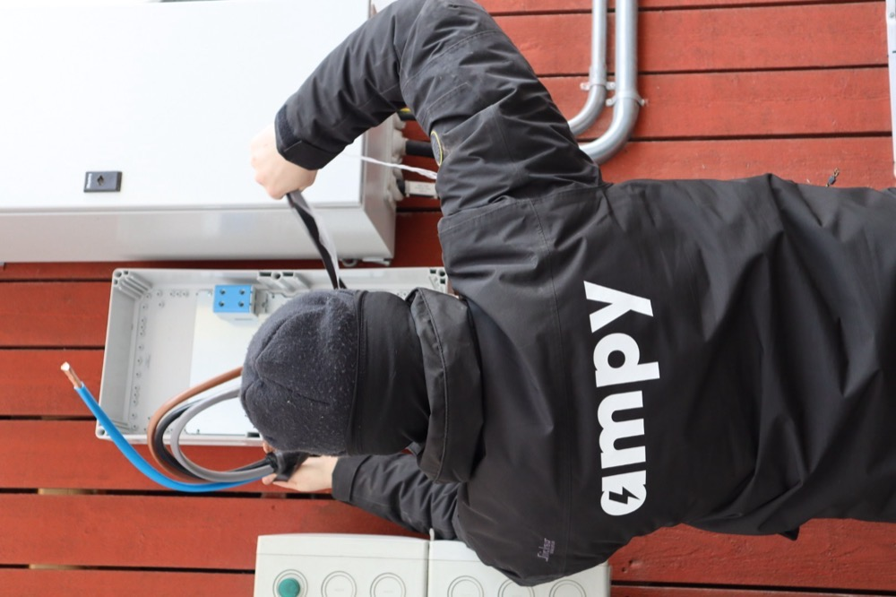
HERO-S vid dokumentationens bredd (kortet under 1200 px: bilden 46 procent). Copyn är ägarens testcopy ordagrant ur preview/v4-s-1440.html:328-334; rubrikrollen bärs av <p class="ampy-hero2__h1">. Vid 1440 är bilden 619 x 619 och H1 48 px; under 768 läggs bilden bakom texten med den bastanta scrimmen (kontrastmätt 4,75:1 mot helvit bild). Proof-siffrorna är [GAP] mot ampy-foretagsdata (taggen i exemplet).
Anatomi (primitiverna)
| Del | 1440 | 390 | Token |
|---|---|---|---|
| Ram | 1424 x 683, radie 22, padding 48 | 374 x 754, radie 18, 0 24 + 7vh | --ampy-bg-dark |
| H1 | 48 / 700 / 1.07 / -.008em | 34 px | --ampy-text-h1 (31 till 48) |
| Lead | 20 / 400 / 1.6, 46ch | 16 px | literal 20 (lead-token är 17 till 22, B18) |
| Rytm | H1 till lead 18, lead till CTA 32, CTA till proof 44, proof-botten 52 | 14 / 26 / 24 | hero-s §9 |
| Crumbs | 13 / 500 / 18, topp 20, sep 8 px | samma | --ampy-text-fine |
| S: bild | 619 x 619, radie 20, lätt scrim | bakom, bastant scrim | --ampy-scrim-light/-strong |
| G / Z / E | fullbredds-foto + ghost-pill / formkort 450 x 613 / foto 460 x 528 radie 72 och 28 + vit sekundär | staplat | se bilder |
- En typskala för alla fyra hjältar, deklarerad i primitiverna: scopade typöverrider i hjältefilerna är förbjudna.
- Scrim som kontrastmätt primitiv på bilden, så vilken ACF-bild som helst är läsbar.
- Bryt mot containern (768 / 1200), aldrig viewporten; marginalen bor på kortet, inte på wrappern.
- Ingen glasyta med blur 30 på formkortet (hero-2-form, dömd ut: kant 1,2:1). Z-kortet är platt navy.
- Inga tre navyer (#090b32, #1b1d4b, #16183f): en ram, en färg.
- Ingen entrance-animation och inget opacity:0-utgångsläge (sajtens LCP-bugg).
Kod
<section class="ampy-hero2 ampy-hero2--s">
<div class="ampy-hero2__card ampy-on-dark">
<img class="ampy-hero2__bg" src="../bilder/block/hero2-bg.webp" alt="" aria-hidden="true" width="1200" height="613">
<nav class="ampy-hero2__crumbs" aria-label="Du är här"><a href="#">Hem</a><span aria-hidden="true">›</span><a href="#">Elservice</a><span aria-hidden="true">›</span><span>Byta elcentral</span></nav>
<div class="ampy-hero2__body">
<h1 class="ampy-hero2__h1">Byta elcentral med fast pris och ROT-avdrag</h1>
<p class="ampy-hero2__lead">En behörig elektriker byter din elcentral, märker upp grupperna och sätter jordfelsbrytare. Du får priset innan du bestämmer dig.</p>
<div class="ampy-hero2__actions"><a class="ampy-btn ampy-btn--primary" href="#">Kostnadsfri rådgivning <svg class="ampy-btn__icon" aria-hidden="true"><use href="../../system/ikoner.svg#ik-arrow-up-right"/></svg></a></div>
<div class="ampy-proof">
<a class="ampy-proof__row" href="#"><svg class="ampy-proof__icon" aria-hidden="true"><use href="../../system/ikoner.svg#ik-google"/></svg><span class="ampy-proof__label"><strong>5,0</strong> på Google</span><span class="ampy-proof__stars" role="img" aria-label="5 av 5 stjärnor"><svg><use href="../../system/ikoner.svg#ik-star"/></svg><svg><use href="../../system/ikoner.svg#ik-star"/></svg><svg><use href="../../system/ikoner.svg#ik-star"/></svg><svg><use href="../../system/ikoner.svg#ik-star"/></svg><svg><use href="../../system/ikoner.svg#ik-star"/></svg></span></a>
<span class="ampy-proof__sep" aria-hidden="true"></span>
<span class="ampy-proof__vol">Över 3 000 installationer per år</span>
</div>
</div>
<div class="ampy-hero2__media"><img src="../bilder/block/hero2-foto.jpg" alt="Ny elcentral med märkta grupper" width="1000" height="666"></div>
</div>
</section>
Avvikelser i klonen
- Klonen är ett skal: primitivernas tokenlager (
--ap-*på wrappern) är ersatt av--ampy-*; CTA-kloner, fält och chip kommer från S2. Hero-2 G/Z/E är inte renderade, bara beskrivna. - Leaden 20 px behålls som literal (tokenen lead 17 till 22 skulle ge 17 på mobil, se B18).
- Ink på navy (#dbe3ec / #c9d4e0) blir
--ampy-on-dark-soft(.92).
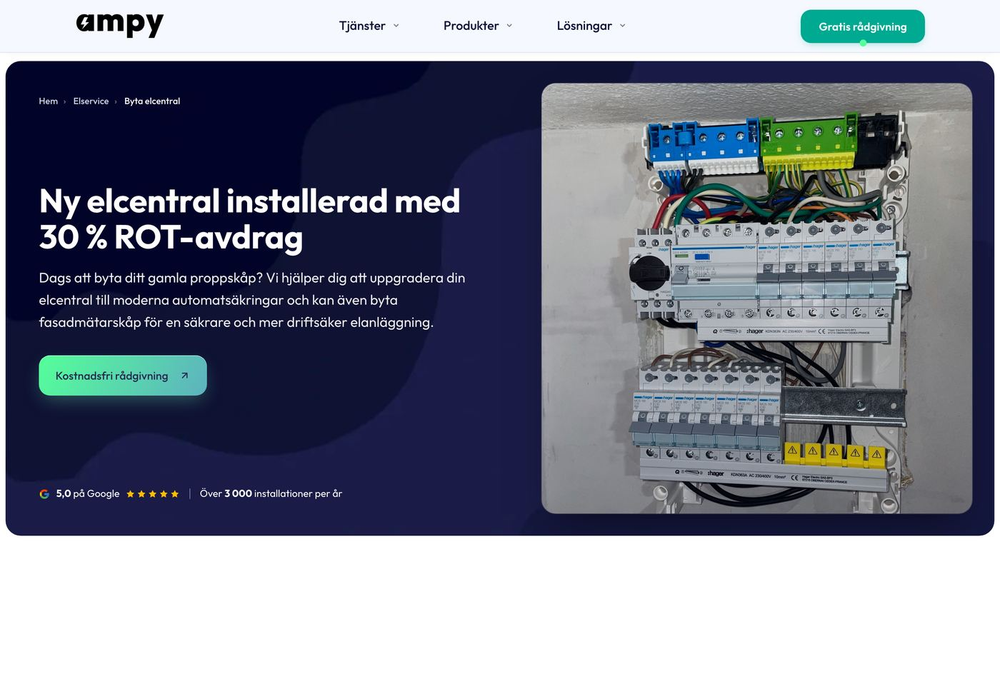
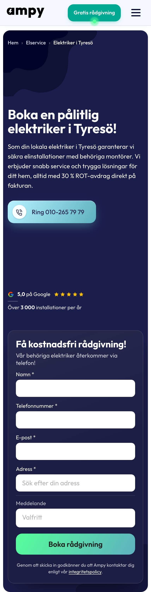

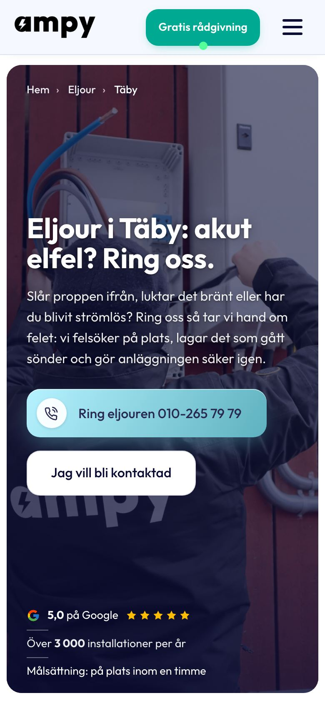
Mini-menu (produktväljaren under heron)
Startsidans block 2: centrerad rubrik och lead, tre kvadratiska fotokort (Elservice, Laddbox, Batterilagring) i navy med mörk radial-overlay, vit korttitel och en himmelsblå pill. Hover lyfter kortet, zoomar fotot och djupnar overlayen.
Kanon: mini-menu (fluentsnippets/ampy-elfirma.css, levererad och installerad live som .ampy-elfirma, auktoritet 2). Varianter: prototype.html (ljus glas-trio: vita kort 368 x 301 radie 22, teal topplinje vid hover, h2 44/800), masterpiece, evify-clone. Blockbiblioteket
Din elektriker för hela hemmet
Med över [GAP] installationer per år hjälper vi dig med elinstallationer, laddbox och batterilagring, allt under ett och samma tak.
Rubrik och lead är källans ordagrant (kallor/mini-menu/index.html:162-163); källans "över 3000" är utbytt mot en synlig [GAP]-tagg tills siffran är signerad i ampy-foretagsdata (candour-grinden), meningen är inte omskriven. Fotot sätts per kort som --photo; saknas det visas aurora-fallbacken (on-brand gradient, aldrig trasig bild). Body-scrimmen bakom titeln garanterar AA för vit text över vilket foto som helst.
Anatomi
| Del | 1440 | 390 | Token |
|---|---|---|---|
| Sektion | padding-block 110, wrap 1320 / 24 | 64 | literal clamp (3xl-token = 112) |
| Rubrik / lead | 38 / 500 / 1.2, 600 max; 18,5 / 300 dämpad, 24 under | 28 / 17,2 | --ampy-text-h2 (36), -body |
| Kort | 404 x 404, radie 20, gap 30, skugga tvådelad .28 / .18 | 342 x 342 staplade, gap 24 | --ampy-radius-card |
| Overlay | radial .30 till .56 (hover .34 till .62) | samma | midnight-alfa |
| Titel | 30 / 700 / 1.05 / -.022em vit + text-shadow | 20 px | --ampy-w-display |
| Pill | 16 / 700, 15 x 32, #5eb1bf, text #1e1e1e (5,5:1), glöd | 14,2 px, 14 x 28 | --apsecondary-teal, --apdarkest-black |
| Rörelse | kort 280 ms, foto 1.08 på 640 ms, overlay 420 ms, inträde 520 ms staggat | samma | --ampy-ease, --ampy-ease-out |
- Hela kortet är länken; pillen är affordans, inte ett andra mål.
- Aurora-fallback när fotot saknas; print-läge som ren lista.
- Hover-koreografin i tre hastigheter (kort, foto, overlay) med egna easings.
- Ingen vit text på pillen (#5eb1bf bär aldrig vit text, B16).
- Ingen fjärde CTA-färg: pillen är den enda himmelsblå knappen på sajten, och README:s teal-pill motsäger koden (dokumentationsdrift).
- Inga siffror i leaden utan [FACT]-källa (källans "över 3000 installationer per år").
Kod
<section class="ampy-picker ampy-band" aria-labelledby="pk-title">
<div class="ampy-picker__wrap">
<header class="ampy-picker__head">
<h2 class="ampy-picker__title" id="pk-title">Din elektriker för hela hemmet</h2>
<p class="ampy-picker__lead">Från felsökning och elcentral till laddbox och batteri. Behöriga elektriker, fast pris och avdraget inräknat.</p>
</header>
<div class="ampy-picker__grid">
<a class="ampy-picker__card ampy-on-dark" href="#"><span class="ampy-picker__media" style="background-image:url('../bilder/block/elservice.webp')"></span><span class="ampy-picker__overlay" aria-hidden="true"></span><span class="ampy-picker__body"><span class="ampy-picker__cardtitle">Elservice</span><span class="ampy-picker__cta">Läs mer <svg aria-hidden="true"><use href="../../system/ikoner.svg#ik-arrow-right"/></svg></span></span></a>
<a class="ampy-picker__card ampy-on-dark" href="#"><span class="ampy-picker__media" style="background-image:url('../bilder/block/laddbox.webp')"></span><span class="ampy-picker__overlay" aria-hidden="true"></span><span class="ampy-picker__body"><span class="ampy-picker__cardtitle">Laddbox</span><span class="ampy-picker__cta">Läs mer <svg aria-hidden="true"><use href="../../system/ikoner.svg#ik-arrow-right"/></svg></span></span></a>
<a class="ampy-picker__card ampy-on-dark" href="#"><span class="ampy-picker__media" style="background-image:url('../bilder/block/batterilagring.webp')"></span><span class="ampy-picker__overlay" aria-hidden="true"></span><span class="ampy-picker__body"><span class="ampy-picker__cardtitle">Batterilagring</span><span class="ampy-picker__cta">Läs mer <svg aria-hidden="true"><use href="../../system/ikoner.svg#ik-arrow-right"/></svg></span></span></a>
</div>
</div>
</section>
Avvikelser i klonen
- Rubriken 38/500 blir
--ampy-text-h236; leaden 18,5/300 blir body 18; body-ink #0f123c blir midnight. - Pillens hover #74c2ce och kortskuggorna saknar token och står som literaler; aurora-fallbackens fem navyer likaså (bara Elservice-varianten klonad).
- Wrap 1320 behålls (container-token 1280 är inte ett tak).
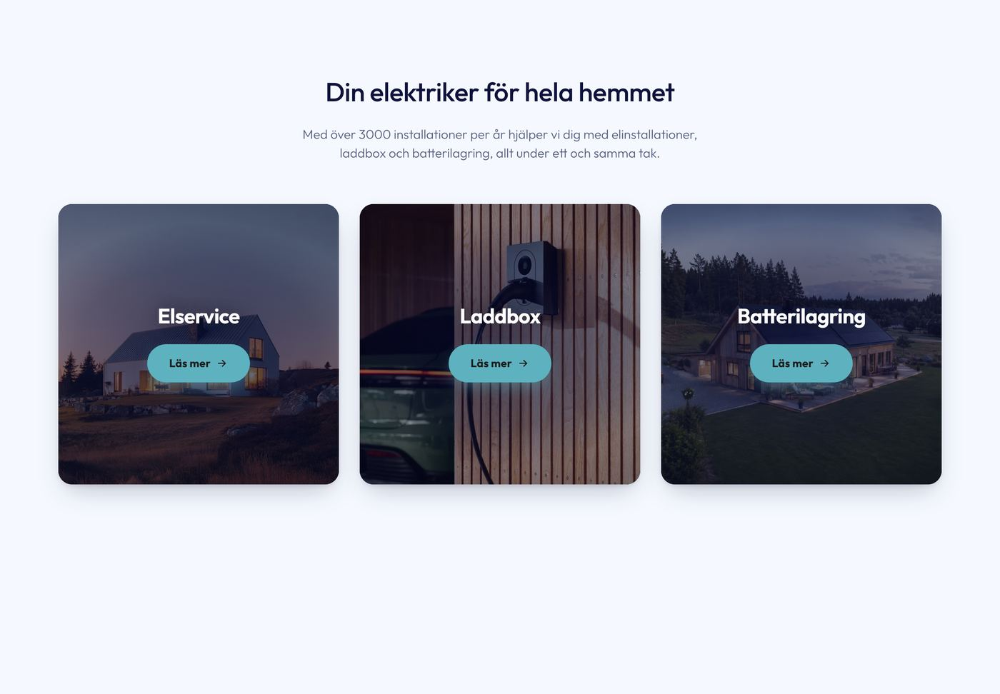
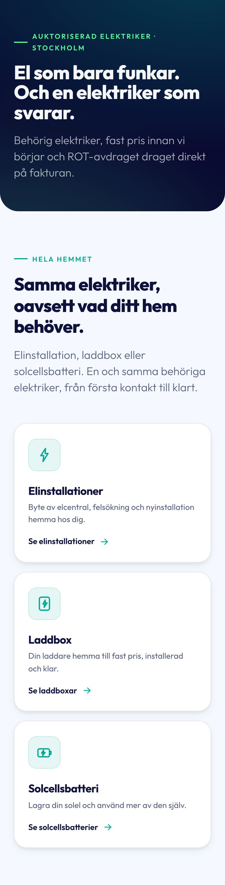
Före/efter med reglage
Rent bevisblock: två kvadratiska ramar sida vid sida med varsin söm som besökaren drar. EN H2 med understruken accent, en avslutande tagline, 0 asks. Bilderna är riktiga img med mått, synliga utan JS; reglaget är ren förbättring.
Kanon: fore-efter-cro (dist/01-fore-efter.css, riktning A "Reglaget" vald 2026-08-17, auktoritet 2). Bilderna är illustrationer tills fotobiblioteket finns ([GAP]). Blockbiblioteket
Så ser det ut när vi har bytt en elcentral
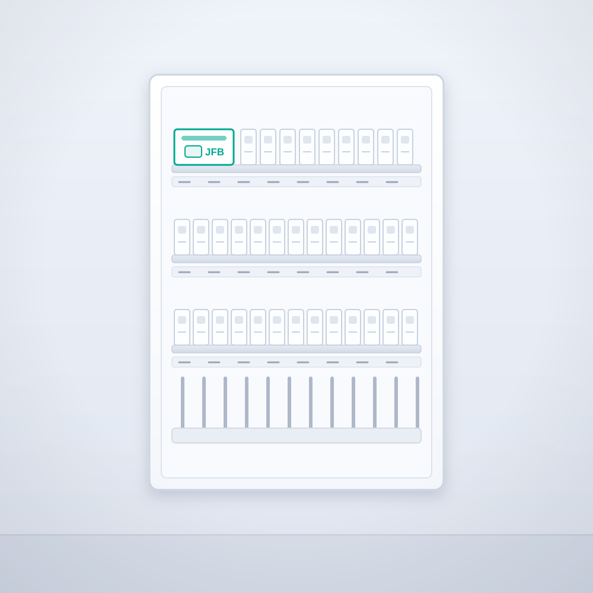
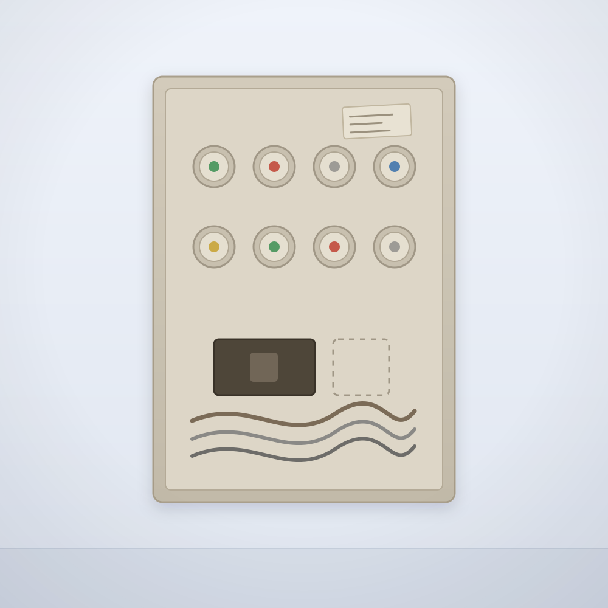
FöreNy elcentral, jordfelsbrytare och märkta grupper. Samma jobb oavsett hur det såg ut innan.
Positionen är en registrerad custom property (--ampy-ba-pos) som chip-lagret, sömmen, handtaget och reglagespåret alla läser. På den här sidan kopplar sex rader JS reglaget till egenskapen; i källan sköter 03-fore-efter.js drag i ramen, tangentbord och ledtrådens uttoning.
Anatomi
| Del | 1440 | 390 | Token |
|---|---|---|---|
| Sektion | padding 79 / 20, teal-dis radial .055 | 35 / 13 | --ampy-space-2xl/-s |
| H2 | 32 / 400 / 1.2 centrerad, understrykning .075em | 24,5 px | --ampy-text-h2 (36 / 500) |
| Ram | 626 x 626, radie 20, tredelad skugga + inset-hårlinje .07 | 363 x 363, radie 16,3 | --ampy-radius-card |
| Chip | 14 / 600 / .12em versal, 8 x 15, navy-glas .82 blur 10 / neonmint | samma | --ampy-bg-glass-dark, --apneon-mint |
| Söm + handtag | 2 px vit + 52 px vit cirkel med ring | 46 px | literaler i källan |
| Reglage | 44 h, spår 6, tumme 26 med navy-kant, fokus 3 px | samma | --ampy-focus |
| Tagline | 18 / 400 / 1.45 navy .78, 62ch, 39,6 över | 16,1 px | --ampy-text-body |
- Ramen äger pekaren: bilderna pointer-events none, touch-action pan-y pinch-zoom.
- Klipp chip-lagret spegelvänt så en söm dragen hela vägen tar sin etikett med sig.
- Transition på positionen bara vid tangentbord och klick, aldrig under drag.
- Inga knappar eller länkar i blocket: 0 asks, det kan ligga var som helst utan att röra sidans budget.
- Ingen bildtext per par; taglinen binder ihop två utgångslägen till ett löfte.
- Inga osignerade fotopar: ACF-grinden vägrar rendera dem.
Kod
<section class="ampy-ba" aria-labelledby="ba-h2">
<div class="ampy-ba__inner">
<h2 class="ampy-ba__h2" id="ba-h2">Så ser det ut när vi har <span class="ampy-ba__accent">bytt en elcentral</span></h2>
<div class="ampy-ba__pair">
<figure class="ampy-ba__fig" data-ampy-ba>
<div class="ampy-ba__frame">
<div class="ampy-ba__layer ampy-ba__layer--efter"><img src="../bilder/block/fe-efter.svg" width="1000" height="1000" alt="Byte av elcentral, efter, utfört av Ampy"></div>
<div class="ampy-ba__layer ampy-ba__layer--fore"><img src="../bilder/block/fe-fore.svg" width="1000" height="1000" alt="Byte av elcentral, före"><span class="ampy-ba__chip ampy-ba__chip--fore">Före</span></div>
<div class="ampy-ba__chips"><span class="ampy-ba__chip ampy-ba__chip--efter">Efter</span></div>
<div class="ampy-ba__seam" aria-hidden="true"></div>
<div class="ampy-ba__handle" aria-hidden="true"><svg viewBox="0 0 24 24" fill="none" stroke="currentColor" stroke-width="1.75" stroke-linecap="round" stroke-linejoin="round"><path d="m9 6-6 6 6 6M15 6l6 6-6 6"/></svg></div>
<p class="ampy-ba__hint" aria-hidden="true">Dra för att jämföra</p>
</div>
<input class="ampy-ba__range" type="range" min="0" max="100" step="1" value="35" aria-label="Jämför före och efter: från proppskåp till ny central med jordfelsbrytare">
</figure>
<figure class="ampy-ba__fig" data-ampy-ba style="--ampy-ba-pos:55%">
<div class="ampy-ba__frame">
<div class="ampy-ba__layer ampy-ba__layer--efter"><img src="../bilder/block/fe-efter.svg" width="1000" height="1000" alt="Byte av elcentral, efter"></div>
<div class="ampy-ba__layer ampy-ba__layer--fore"><img src="../bilder/block/fe-fore.svg" width="1000" height="1000" alt="Byte av elcentral, före"><span class="ampy-ba__chip ampy-ba__chip--fore">Före</span></div>
<div class="ampy-ba__chips"><span class="ampy-ba__chip ampy-ba__chip--efter">Efter</span></div>
<div class="ampy-ba__seam" aria-hidden="true"></div>
<div class="ampy-ba__handle" aria-hidden="true"><svg viewBox="0 0 24 24" fill="none" stroke="currentColor" stroke-width="1.75" stroke-linecap="round" stroke-linejoin="round"><path d="m9 6-6 6 6 6M15 6l6 6-6 6"/></svg></div>
<p class="ampy-ba__hint" aria-hidden="true">Dra för att jämföra</p>
</div>
<input class="ampy-ba__range" type="range" min="0" max="100" step="1" value="55" aria-label="Jämför före och efter: femton grupper samlade i en central med jordfelsbrytare">
</figure>
</div>
<p class="ampy-ba__tagline">Ny elcentral, jordfelsbrytare och märkta grupper. Samma jobb oavsett hur det såg ut innan.</p>
</div>
</section>
Avvikelser i klonen
- H2 32/400 (källans belägg: "8 av 16 live-H2:or") blir
--ampy-text-h236/500 (B17). Fokusringen byter från teal till navy (B14). - Ramens #eaeef5 och den tredelade skuggan saknar token; sömmens och handtagets alfa-steg står som literaler.
- Källans
--ampyfe-*-namnrymd (tokentrogen i värde) är ersatt av--ampy-*.
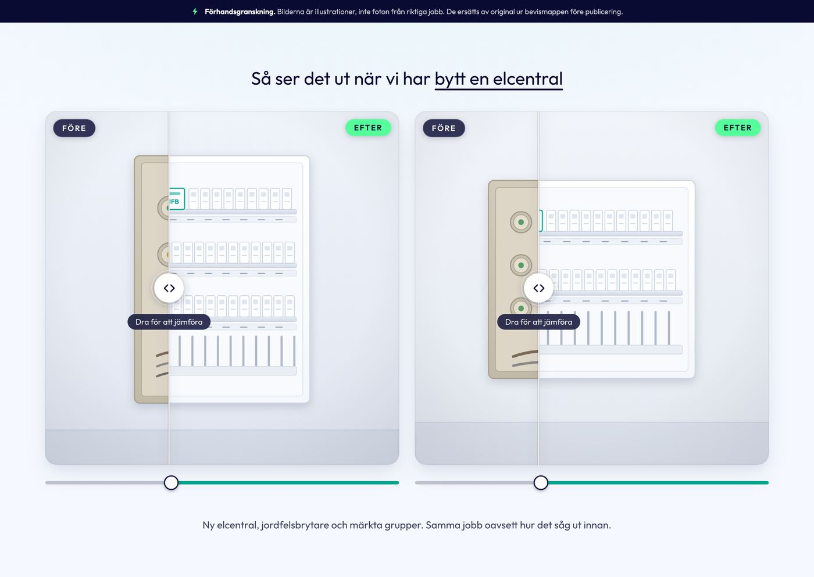
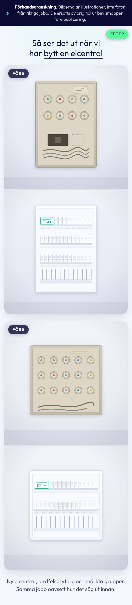
Vår process (baslinje, riktningsval väntar)
Auktoritet 3. Tre riktningar byggda, v2 A "Tidslinjen" rekommenderad, ingen vald. Blocket ligger på 212 sidor i sin gamla form. Det här är v2 A som belägg för mönstret, inte kanon.
"Vad som händer sen": ett vitt kort med rubriken och bevisraden till vänster (32 procent) och fyra räls-steg till höger. Steg 1 bär blockets enda teal (öppningsringen). Brödtexten börjar med ett löfteschip i medium vikt.
Belägg: var-process-cro (v2/ampy-process.css, v2 A, auktoritet 3). Stegen finns även som ringar i rot-gt-cro (kanon för processteg) och som noder i offer-accepted. Blockbiblioteket
Vad som händer sen
Elektriker, inte säljare
Oftast inom en arbetsdag. En av våra egna ringer upp dig.
Fast pris
Kostnadsfri offert. Skriftligt, materialet inräknat, ingenting som hänger på slumpen.
Du får säga nej
Ingen bindning. Du slipper förklara varför.
Betala efteråt
Avdraget redan gjort. Faktura när jobbet är klart, med ROT eller grön teknik avdraget.
- Registrerat elinstallationsföretag
- Ansvarsförsäkrad
Löfteschipen ("Oftast inom en arbetsdag", "Kostnadsfri offert") är fem öppna GAP-signaturer i källan; renderas de utan signering är det påhittade löften.
Anatomi
| Del | 1440 | 390 | Token |
|---|---|---|---|
| Sektion / kort | 56 / 40 / 80; kort 1280 radie 20, padding 40 / 80 / 48, husets skugga | 24 / 0 / 28; kort kant i kant radie 0 | --ampy-shadow-card (B10) |
| Grid | 32 procent + 1fr, gap 56 | staplat | egen |
| H2 | 40 / 500 / 1.05 / -.018em vänsterställd | 28 / 1.1 | --ampy-text-h2 (36) |
| Steg | medaljong 24, indrag 40, räls 1 px, gap 28, h3 22 / 500, text 17 / 300 .72 27em | gap 20, h3 19 | --ampy-text-h3, --ampy-text-body |
| Bevisrad | 14 / 400, dold under 768 | dold | --ampy-text-label |
| Överlämning | textlänk 17 / 500 + pil 18, 48 px träffyta | samma | länk, inte knapp |
- Accentbudget: en enda teal-användning, på det som betyder något (öppningen), aldrig på bockar.
- Rytmstege 10 / 20 / 28 / 40 / 56 / 80: zon mot syskon 2,0, botten cirka 1,5 gånger toppen.
- Överlämningen är en länk, inte en knapp, så den inte konkurrerar med formuläret under.
- Ingen v1: 40 px teal-fylld medaljong i fyra kolumner lästes som "AI-slop, låg finess".
- Inga fyra lika breda kolumner: det betyder fyra alternativ, inte fyra steg i tid.
- Inga ringade steg som "avklarade": stepper-konventionen bocken är fel här.
Kod
<section class="ampy-process" aria-labelledby="pr-title">
<div class="ampy-process__inner">
<div class="ampy-process__head"><h2 class="ampy-process__title" id="pr-title">Vad som händer sen</h2></div>
<ol class="ampy-process__steps">
<li class="ampy-process__step"><span class="ampy-process__num" aria-hidden="true">1</span><h3 class="ampy-process__label">Elektriker, inte säljare</h3><p class="ampy-process__body"><span class="ampy-process__chip">Oftast inom en arbetsdag.</span> En av våra egna ringer upp dig.</p></li>
<li class="ampy-process__step"><span class="ampy-process__num" aria-hidden="true">2</span><h3 class="ampy-process__label">Fast pris</h3><p class="ampy-process__body"><span class="ampy-process__chip">Kostnadsfri offert.</span> Skriftligt, materialet inräknat, ingenting som hänger på slumpen.</p></li>
<li class="ampy-process__step"><span class="ampy-process__num" aria-hidden="true">3</span><h3 class="ampy-process__label">Du får säga nej</h3><p class="ampy-process__body"><span class="ampy-process__chip">Ingen bindning.</span> Du slipper förklara varför.</p></li>
<li class="ampy-process__step"><span class="ampy-process__num" aria-hidden="true">4</span><h3 class="ampy-process__label">Betala efteråt</h3><p class="ampy-process__body"><span class="ampy-process__chip">Avdraget redan gjort.</span> Faktura när jobbet är klart, med <a href="#">ROT</a> eller grön teknik avdraget.</p></li>
</ol>
<div class="ampy-process__aside">
<ul class="ampy-process__trust"><li>Registrerat elinstallationsföretag</li><li>Ansvarsförsäkrad</li></ul>
<a class="ampy-process__handoff" href="#"><span class="ampy-process__handoff-label">Berätta vad som behöver göras</span><svg aria-hidden="true"><use href="../../system/ikoner.svg#ik-arrow-right"/></svg></a>
</div>
</div>
</section>
Avvikelser i klonen
- Källans husets skugga (rgba(190,190,190,.19), medvetet vald) blir
--ampy-shadow-card(B10). H2 40 blir 36 (B17); brödtext 17 blir body 16 till 18. - Källans hairline rgba(9,11,50,.14) är exakt
--ampy-line; medaljongens skugga blir--ampy-shadow-subtle. - Riktning C (tidsstämplad lista) och v1 A/B/C är inte klonade.
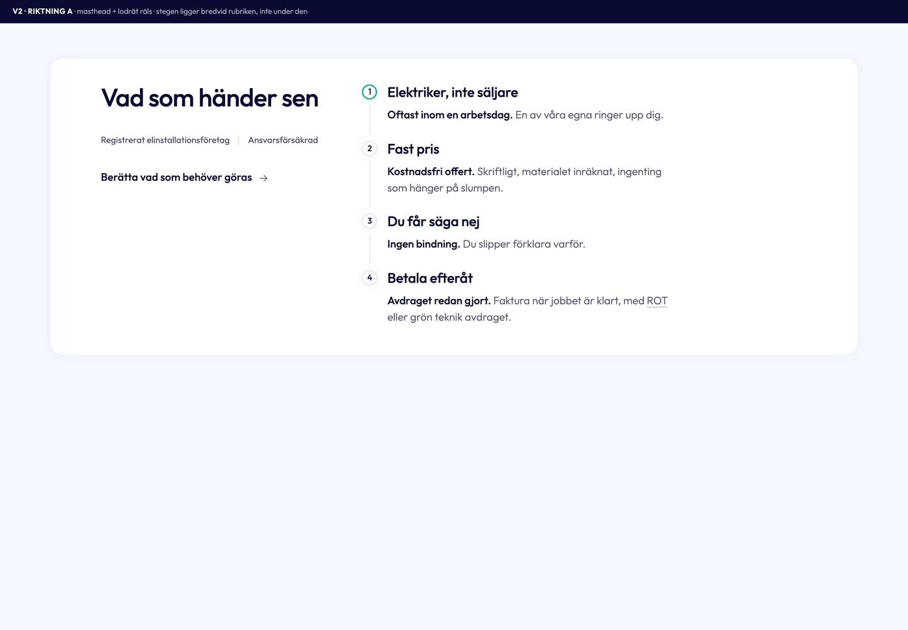
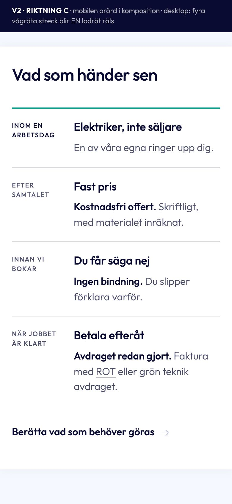
Fotobedömningens kort, formläge och kvitto
Avslutskortet: eyebrow med kameraglyf, tvåfärgad H2 (frågan lätt, svaret medium), info-rader mellan hårlinjer, och i kvittoläget en bock på teal-tint, "Tack. Din bild är inskickad.", ärende-id, en löftesrad och ansvarsraden. Signaturdevisen i formläget är "fem staplar, en tänd" (S2:s fält).
Kanon: fotobedomningen (v2/dist/afk-styles.css, v2 byggd, auktoritet 2, go/no-go = dubbel uppladdning). Formfälten dokumenteras i Fält och reglage. Blockbiblioteket
Fotobedömning
Osäker på elcentralen? Du får besked av en behörig elektriker.
- Vi ringer dig oftast inom en arbetsdag och går igenom bilden med dig.
- Du får besked även om svaret är att du inte behöver göra något.
- Luktar det bränt eller blir något varmt? Ring 010-265 79 79 i stället för att fota. Vid brand eller fara: ring 112.
Tack. Din bild är inskickad.
Ärende A7K2Q9.
- Du får veta vad du kan behöva göra. Eller inte behöva göra.
Det här är en bedömning utifrån bilden du skickade, inte en besiktning. En bild visar inte allt som sitter dolt. Vill du ha ett säkert svar behöver vi titta på plats.
Kvittoläget (tillstånd 9 i källan). Källans "inom 24 timmar" är ändrad till lead-magnet-kanonens "oftast inom en arbetsdag" (candour-grinden, LM-1). Kameraglyfen är ersatt med spritens sök-ikon; källan har en egen kamera-SVG.
Anatomi
| Del | 390 (kanon) | 1280-vy | Token |
|---|---|---|---|
| Band / kort | 40 / 16 / 48; kort 358, padding 24 / 20, radie 20, ram, tredelad skugga | grid 480 + 724 vid 900 cqi, padding 32 | --ampy-radius-card, --ampy-line |
| Eyebrow | 15 / 600 / .02em + glyf 16 | samma | literal 15 (B19 säger 12) |
| H2 | 28 / 1.18 / -.015em, fråga 300 + svar 500 | 36 / 1.15 | --ampy-text-h2 från 900 cqi |
| Info-rad | glyf 22 i 26-kolumn, gap 13, text 17 / 400 / 1.45, rader 10 | samma | --apnavy-ink |
| Kvitto | bock 40 på teal-tint, rubrik 20 / 500, ref 15, ansvar 15 / 300 | samma | --apteal-tint, --ampy-action-strong |
| Staplar (formläget) | 52 / 52 / 52 / 52 / 58, fält radie 12, submit radie 16 | par namn/telefon | S2:s fält |
- Noll deklarationer under 15 px i kortet; två ytor (vit och sky-mist); en gradient (submiten).
- Kontrollkant minst 3:1 (#5f6480, aldrig #e6ecf6); teal bara som linjeglyf, redundant mot texten intill.
- Candour-texten under submiten på alla vyer: "En bild säger mycket, men inte allt."
- Ingen röd platta för akutraden (v1:s ruta var 1,32 gånger handlingens yta).
- Ingen neonmint mot vitt (1,30:1), ingen teal som text eller kant (2,96:1).
- Ingen tyst fallback: saknas tjänst-slug, löftesklass eller foto renderas inget.
Kod
<section class="ampy-afk" aria-labelledby="afk-h2">
<div class="ampy-afk__card">
<p class="ampy-afk__eyebrow"><svg aria-hidden="true"><use href="../../system/ikoner.svg#ik-search"/></svg><span>Fotobedömning</span></p>
<h2 class="ampy-afk__h2" id="afk-h2"><span class="ampy-afk__q">Osäker på elcentralen?</span> <span class="ampy-afk__a">Du får besked av en behörig elektriker.</span></h2>
<ul class="ampy-afk__info">
<li class="ampy-afk__row"><span class="ampy-afk__glyf"><svg aria-hidden="true"><use href="../../system/ikoner.svg#ik-clock"/></svg></span><span class="ampy-afk__text">Vi ringer dig oftast inom en arbetsdag och går igenom bilden med dig.</span></li>
<li class="ampy-afk__row"><span class="ampy-afk__glyf"><svg aria-hidden="true"><use href="../../system/ikoner.svg#ik-check"/></svg></span><span class="ampy-afk__text">Du får besked även om svaret är att du inte behöver göra något.</span></li>
<li class="ampy-afk__row ampy-afk__row--akut"><span class="ampy-afk__glyf"><svg aria-hidden="true"><use href="../../system/ikoner.svg#ik-warning"/></svg></span><span class="ampy-afk__text">Luktar det bränt eller blir något varmt? Ring <a class="ampy-afk__tel" href="tel:+46102657979">010-265 79 79</a> i stället för att fota. Vid brand eller fara: ring 112.</span></li>
</ul>
<div class="ampy-afk__receipt">
<span class="ampy-afk__check"><svg aria-hidden="true"><use href="../../system/ikoner.svg#ik-check"/></svg></span>
<h3 class="ampy-afk__rtitle" tabindex="-1">Tack. Din bild är inskickad.</h3>
<p class="ampy-afk__ref">Ärende A7K2Q9.</p>
<ul class="ampy-afk__info">
<li class="ampy-afk__row"><span class="ampy-afk__glyf ampy-afk__glyf--puls"><svg aria-hidden="true"><use href="../../system/ikoner.svg#ik-check"/></svg></span><span class="ampy-afk__text">Du får veta vad du kan behöva göra. Eller inte behöva göra.</span></li>
</ul>
<p class="ampy-afk__ansvar">Det här är en bedömning utifrån bilden du skickade, inte en besiktning. En bild visar inte allt som sitter dolt. Vill du ha ett säkert svar behöver vi titta på plats.</p>
</div>
</div>
</section>
Avvikelser i klonen
- Eyebrow 15/600 behålls som literal (drift mot B19:s 12 px); H2 28 behålls under 900 cqi.
- Källans #0a8f7c (meningsbärande glyf, 3,58:1 mot tint) blir
--ampy-action-strong(#007a69, 4,3:1 mot tint). - Formläget (staplarna) är inte renderat här; det bor i S2:s fältsida och i källans preview.
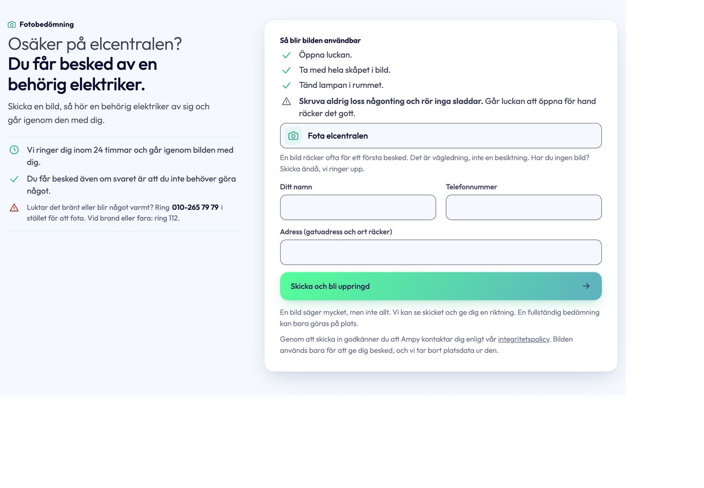
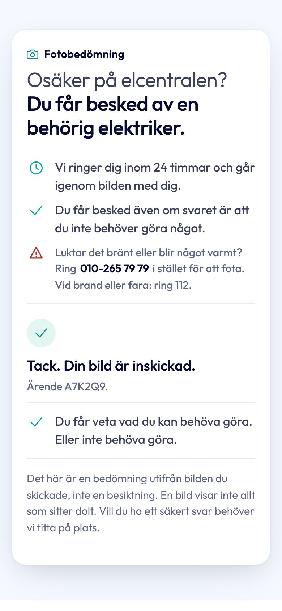
Visste du att (redaktionellt kort)
Det lätta faktakortet: midnight-kort med teal-kicker och blixt, rubrik, kort brödtext och en glödlampa med Ampy-blixten som filament. Registret är lätt och inbjudande, inte allvarligt (CLAUDE.md regel 6). Ett av få block som binder direkt till produktionens ap-tokens.
Kanon: visste-du-att (visste-du-att.css + Bricks paste-JSON, slutaudit GO, auktoritet 2). Mätningen visade att prototypen speglade fel tokenskala (H2 48 i prototypen, 36 i produktion). Blockbiblioteket
Visste du att
En jordfelsbrytare bryter strömmen på under 30 millisekunder
Det är snabbare än hjärtat hinner reagera. Därför är den det billigaste skyddet i hela elcentralen, och det första vi kollar när vi kommer hem till dig.
Faktan (30 ms) är exempelcopy och ska ha en [FACT]-källa innan den används. Lampan är prototypens inline-SVG förenklad; produktionen använder en PNG i normalt flöde.
Anatomi
| Del | 1440 | 390 | Token |
|---|---|---|---|
| Sektion / kort | 79 / 39,6; kort 1280 radie 20 padding 79, glöd uppe höger | 21,5 / 13,3; padding 21,5, glöd topp-centrerad | --ampy-space-2xl, --ampy-radius-card |
| Grid | 1fr + clamp(160, 22vw, 260) = 782 + 260, gap 79 | stack, lampa överst, gap 16,9 | --ampy-space-2xl/-m |
| Kicker | 24 / 500 teal + blixt 18 | 16,1 px | --ampy-text-h3, --ampy-action |
| H2 | 36 / 500 / 1.2 vit balance | 26,8 px | --ampy-text-h2 |
| Text | 18 / 300 / 1.5 vit .82, 54ch | 16,1 px | --ampy-text-body |
| Lampa | 240 px | 120 / 96 px | SVG |
- Lätt register: nyfiket, mänskligt, ett "!" är välkommet om påståendet håller.
- Glöd som ytbehandling, inte som andra device; blixten som filament är varumärkesmotivet.
- Grid och stack utan absolut positionering; ACF-drivet innehåll.
- Inte det allvarliga registret här: det gav "det mörka, tunga slop-kortet".
- Ingen fakta utan källa i kortet.
- Ingen H2 på 48 px: prototypens skala var theme-style, inte produktionens.
Kod
<section class="ampy-vda" aria-labelledby="vda-h">
<div class="ampy-vda__card ampy-on-dark">
<div class="ampy-vda__content">
<p class="ampy-vda__kicker"><svg aria-hidden="true"><use href="../../system/ikoner.svg#ik-bolt"/></svg>Visste du att</p>
<h2 class="ampy-vda__heading" id="vda-h">En jordfelsbrytare bryter strömmen på under 30 millisekunder</h2>
<div class="ampy-vda__text"><p>Det är snabbare än hjärtat hinner reagera. Därför är den det billigaste skyddet i hela elcentralen, och det första vi kollar när vi kommer hem till dig.</p></div>
</div>
<div class="ampy-vda__media">
<svg class="ampy-vda__bulb" viewBox="0 0 200 240" role="img" aria-label="Glödlampa"><defs><linearGradient id="vda-g" x1="0" y1="0" x2="0" y2="1"><stop offset="0" stop-color="#b6f2ff"/><stop offset=".55" stop-color="#55ff9a"/><stop offset="1" stop-color="#00a991"/></linearGradient></defs><circle cx="100" cy="96" r="88" fill="rgba(0,169,145,.14)"/><path d="M100 18a70 70 0 0 0-42 126c8 6 12 14 12 24v6h60v-6c0-10 4-18 12-24a70 70 0 0 0-42-126Z" fill="url(#vda-g)" opacity=".95"/><path d="M104 74 84 112h18l-6 34 22-42H100l4-30Z" fill="#090b32"/><rect x="70" y="178" width="60" height="12" rx="6" fill="rgba(255,255,255,.55)"/><rect x="74" y="196" width="52" height="12" rx="6" fill="rgba(255,255,255,.4)"/><rect x="82" y="214" width="36" height="12" rx="6" fill="rgba(255,255,255,.3)"/></svg>
</div>
</div>
</section>
Avvikelser i klonen
- Kickern 24 px via
--aptext-lblir--ampy-text-h322 (teal som stor text, 6,4:1 på midnight; aldrig som liten text). - Skuggan 0 12px 40px .18 saknar token (raised = .14) och står som literal; brödtextens .82 ligger mellan tokens (.66 / .92).
- Glöden är kvar som undantag från B9 (slutaudit GO); alla andra mörka ytor är platta.
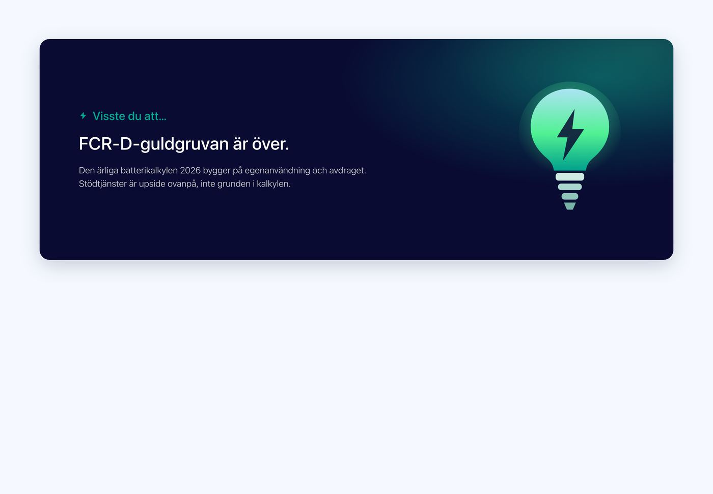
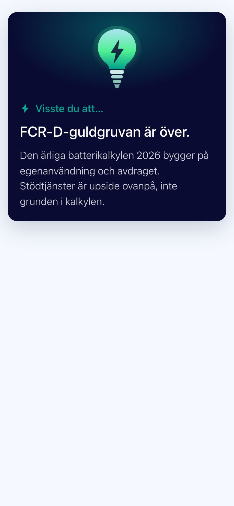
Artikelkomponenter
Sex komponenter ur artikelmallen, konverterade från Tailwind-paletten till tokens: snabbfakta ("Snabbt svar" med takeaways), FAQ som details/summary, tabell (den scopade Bricks-tabellen), byline (E-E-A-T-skelettet), innehållsförteckning och callout (pro-tip och citat). Artikelmallens blå #326afd är utbytt mot text-teal (B1).
Kanon: article-template (src/ + handover-ampy-tabell/ampy-tabell.css, auktoritet 2, 187 filer okommitterade lokalt). Mallens hero, TOC-aktivering, JSON-LD och delning följer inte med. Blockbiblioteket
Behöver du byta elcentral?
Inte i förebyggande syfte. Byt när centralen saknar jordfelsbrytare, när säkringar löser ut upprepat, eller när du bygger ut med laddbox eller värmepump.
- Två återställningar är taket. Löser säkringen ut igen är det ett fel, inte otur.
- Materialet ger inget ROT-avdrag: 30 procent på arbetet, aldrig på hela fakturan.
- En behörig elektriker gör jobbet. Registret hos Elsäkerhetsverket är öppet för alla.
Kod
<div class="ampy-byline">
<div class="ampy-byline__avatars"><span class="ampy-byline__avatar" aria-hidden="true">JC</span><span class="ampy-byline__avatar" aria-hidden="true">EL</span><span class="ampy-byline__avatar" aria-hidden="true">OS</span></div>
<div class="ampy-byline__roles"><span class="ampy-byline__role">Skriven av <b>Julius Callahan</b></span><span class="ampy-byline__role">Faktagranskad av <b>Elektriker, Ampy</b></span></div>
<span class="ampy-byline__verified"><svg aria-hidden="true"><use href="../../system/ikoner.svg#ik-check-circle"/></svg>Verifierad av expert</span>
<span class="ampy-byline__meta"><span>Uppdaterad 12 september 2026</span><span>6 min</span></span>
</div>
<div class="ampy-quick" style="margin-top:var(--ampy-space-s)">
<span class="ampy-quick__eyebrow">Snabbt svar</span>
<h2 class="ampy-quick__title">Behöver du byta elcentral?</h2>
<p class="ampy-quick__text">Inte i förebyggande syfte. Byt när centralen saknar jordfelsbrytare, när säkringar löser ut upprepat, eller när du bygger ut med laddbox eller värmepump.</p>
<ol class="ampy-quick__list"><li>Två återställningar är taket. Löser säkringen ut igen är det ett fel, inte otur.</li><li>Materialet ger inget ROT-avdrag: 30 procent på arbetet, aldrig på hela fakturan.</li><li>En behörig elektriker gör jobbet. Registret hos Elsäkerhetsverket är öppet för alla.</li></ol>
</div>
Får jag ROT på materialet?
Nej. ROT ger 30 procent på arbetskostnaden. På ett jobb för 30 000 kr där 12 000 kr är material blir avdraget 5 400 kr, inte 9 000 kr.
Kan pensionärer få ROT?
Ingen övre åldersgräns. Det som avgör är skatten: räcker den inte kan Skatteverket kräva mellanskillnaden i slutskatten.
Hur lång tid tar ett byte?
Oftast en arbetsdag. Strömmen är av några timmar under själva bytet.
| Jobb | Arbete | Material | ROT-avdrag |
|---|---|---|---|
| Byta elcentral | 18 000 kr | 12 000 kr | 5 400 kr |
| Jordfelsbrytare | 2 400 kr | 900 kr | 720 kr |
| Laddbox (grön teknik) | 6 000 kr | 9 000 kr | 7 500 kr |
Räkneexempel, inte priser. ROT 30 procent på arbetet; grön teknik 50 procent på arbete och material, tak 50 000 kr per person och år.
Kod
<div class="ampy-faq">
<details class="ampy-faq__item" open><summary class="ampy-faq__q">Får jag ROT på materialet?</summary><div class="ampy-faq__a"><p>Nej. ROT ger 30 procent på arbetskostnaden. På ett jobb för 30 000 kr där 12 000 kr är material blir avdraget 5 400 kr, inte 9 000 kr.</p></div></details>
<details class="ampy-faq__item"><summary class="ampy-faq__q">Kan pensionärer få ROT?</summary><div class="ampy-faq__a"><p>Ingen övre åldersgräns. Det som avgör är skatten: räcker den inte kan Skatteverket kräva mellanskillnaden i slutskatten.</p></div></details>
<details class="ampy-faq__item"><summary class="ampy-faq__q">Hur lång tid tar ett byte?</summary><div class="ampy-faq__a"><p>Oftast en arbetsdag. Strömmen är av några timmar under själva bytet.</p></div></details>
</div>
<div class="ampy-table">
<div class="ampy-table__scroll"><table>
<thead><tr><th>Jobb</th><th>Arbete</th><th>Material</th><th>ROT-avdrag</th></tr></thead>
<tbody>
<tr><td>Byta elcentral</td><td class="num">18 000 kr</td><td class="num">12 000 kr</td><td class="num">5 400 kr</td></tr>
<tr><td>Jordfelsbrytare</td><td class="num">2 400 kr</td><td class="num">900 kr</td><td class="num">720 kr</td></tr>
<tr><td>Laddbox (grön teknik)</td><td class="num">6 000 kr</td><td class="num">9 000 kr</td><td class="num">7 500 kr</td></tr>
</tbody>
</table></div>
<p class="ampy-table__caption">Räkneexempel, inte priser. ROT 30 procent på arbetet; grön teknik 50 procent på arbete och material, tak 50 000 kr per person och år.</p>
</div>
Tips från fältet
Finns 6 mA DC-skydd i laddboxen räcker en jordfelsbrytare typ A. Saknas det krävs typ B. Fråga leverantören innan du köper.
Läs om jordfelsbrytareDu behöver inte byta den i förebyggande syfte. 40 procent av surrande centraler vi rycker ut på behöver bara ett nytt bleck.
Oskar, elektriker på Ampy
Kod
<nav class="ampy-toc" aria-label="Innehåll">
<p class="ampy-toc__title">Innehåll</p>
<ol class="ampy-toc__list">
<li><a class="ampy-toc__link is-active" href="#">När behöver du byta?</a><ol><li><a class="ampy-toc__link" href="#">Tecken på fel</a></li><li><a class="ampy-toc__link" href="#">Två återställningar</a></li></ol></li>
<li><a class="ampy-toc__link" href="#">Vad kostar det?</a></li>
<li><a class="ampy-toc__link" href="#">Så räknas ROT</a></li>
<li><a class="ampy-toc__link" href="#">Vanliga frågor</a></li>
</ol>
</nav>
Anatomi
| Komponent | Källan | Klonen |
|---|---|---|
| Snabbfakta | kort med 4 px neonmint-kant, eyebrow 10 till 15 / 800 .2em, H2 30 / 700, takeaways numrerade | eyebrow 12 / 600 / .14em teal-deep, h3 22 / 600, nummer i 26 px teal-tint-cirkel |
| FAQ | accordion, svar 14,5 px, JSON-LD FAQPage | details/summary, fråga 18 / 600 min 56 h, svar body 16 till 18 / 300, chevron 22 |
| Tabell | max 44rem, ram #d7e0ef radie 16, thead 10,9 / 600 versal .07em #fafcff, celler 14,4 / 1rem | ram --ampy-line radie 20, thead 12 / 600, celler 14 till 16 / 400 padding 19,8; siffror tabular höger |
| Byline | tre avatarer, roller 13 px, "Verifierad av expert", datum, lästid | avatarer 36 navy, small 14 till 16, verified i success-ink |
| TOC | sticky 320, länkar 15,5 / 500, aktiv electric på #eef3ff radie 8 | samma mått, aktiv teal-deep på teal .08 radie 6 till 8 |
| Callout | PRO TIP 15 / 700 .22em, text 58ch, knapp; citat 18 + 40 / 700-tecken | eyebrow-rollen, text body, länk i st.f. knapp; citat lead 17 till 22 med 3 px teal-kant |
- E-E-A-T-skelettet: tre roller, verifierad, uppdaterad och lästid i bylinen; FAQ med schema i källan.
- "Snabbt svar" med takeaways före brödtexten; TOC med aktiv markering och nested H3.
- Tabellen är scopad, JS-fri, aldrig bredare än brödtexten, med scroll-wrapper.
- Ingen egen primärfärg utanför varumärket (#326afd) och inga vikter 800 som rubrikkanon.
- Inga sex textstorlekar under 16 px: eyebrow 12 är golvet.
- Inget hårdkodat socialt bevis i topbaren ("5.0", "200+ omdömen").
Avvikelser i klonen
- Rot 16 px och rem-skalan är ersatta av tokens (rem-oberoende); vikter 700 / 800 blir 600 / 700; brödtext 18 / 400 lh 1.7 blir body 300 lh 1.5 (B3).
- Tabellens huvudyta #fafcff saknar token och står som literal; ramen #d7e0ef blir
--ampy-line. - Hero, share bar, related articles, lead magnet-kortet och footern är inte klonade (egna kopior av sajtens block).
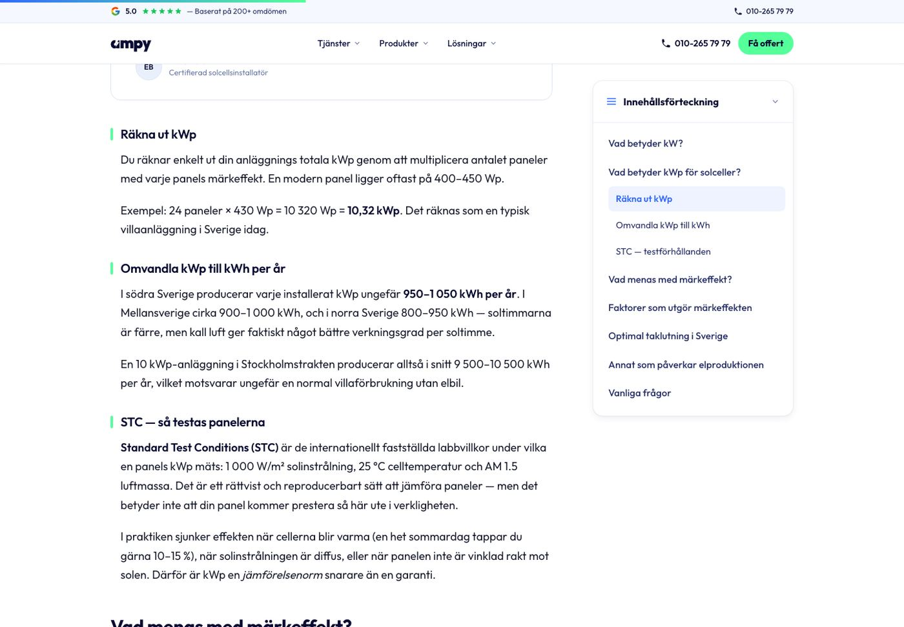
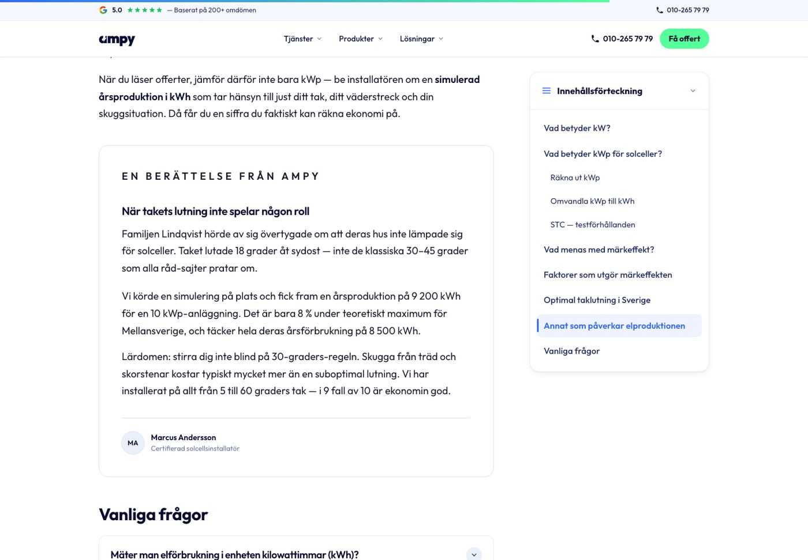
Tack-sidans tidslinje och bokningens sammanfattningskort
Tidslinjen "Så här går vi vidare": tre noder med gradient och vit inset-ring, en teal-linje nod till nod, rubrik 17/600 och en rad small. Bokningskortet: datumet som H1 med "Imorgon,"-prefix, två faktabrickor, arbetslista med bockar och beställningen som kvitto med totalplatta.
Tidslinjen: offer-accepted (styles.css:81-104 .oa__steps, auktoritet 3, det enda belägget; thank-you v1 FINAL saknar stegen trots låst brief). Bokningskortet: booking-confirmation (assets/bokning.css .bk-*, riktning B levererad, auktoritet 2). Blockbiblioteket
Så här går vi vidare
- Din accept är registreradKlart, vi har tagit emot ditt godkännande.
- Anna ringer och bokar tidNi kommer överens om en tid som passar dig.
- Ampys behöriga elektriker utför arbetetPå avtalad tid, utan överraskningar.
Vi kommer
Imorgon,torsdag 17 september
Din beställning
Byte av elcentral
Ny central med jordfelsbrytare, märkta grupper.
Provning och protokoll
Båda på den ljusa auroran (S2:s .ampy-aurora, bara i kundflödet). Beloppen är exempel. Bokningskortet är riktning B "Dagen": datumet som H1, elektrikern utan ram, priset som kvittens utan betalkrav.
Kod (tidslinjen)
<div class="ampy-timeline">
<p class="ampy-timeline__eyebrow">Så här går vi vidare</p>
<ol class="ampy-timeline__steps">
<li class="ampy-timeline__step"><span class="ampy-timeline__node" aria-hidden="true"><svg><use href="../../system/ikoner.svg#ik-check"/></svg></span><span class="ampy-timeline__text">Din accept är registrerad<small>Klart, vi har tagit emot ditt godkännande.</small></span></li>
<li class="ampy-timeline__step"><span class="ampy-timeline__node" aria-hidden="true"><span>2</span></span><span class="ampy-timeline__text">Anna ringer och bokar tid<small>Ni kommer överens om en tid som passar dig.</small></span></li>
<li class="ampy-timeline__step"><span class="ampy-timeline__node" aria-hidden="true"><span>3</span></span><span class="ampy-timeline__text">Ampys behöriga elektriker utför arbetet<small>På avtalad tid, utan överraskningar.</small></span></li>
</ol>
</div>
Anatomi
| Del | Källan | Token |
|---|---|---|
| Tidslinje: nod | 42 px, 145deg #018271 till #016a5d, inset-ring 3 px vit .9, skugga teal .34; linje 2 px teal .42 till .12 | --ampy-action-strong till --apverdict-green |
| Tidslinje: text | 17 / 600 / 1.35 + small 14 / 400; gap 30 mellan steg, 18 nod till text | --ampy-text-label för small |
| Tidslinje: eyebrow | 12 / 600 / .14em teal-deep, gruppen fit-content centrerad | --ampy-text-eyebrow |
| Bokning: kort | 780 dokument, vit .85 + kant .9, radie 22, 0 18px 44px .09 + inset, padding 32 / 32 (24 / 16) | --ampy-glass-border, radie card 20 |
| Bokning: datum | eyebrow 12 / 700 .12em; h1 clamp(30, 5.5vw, 46) / 600 / 1.05 / -.025em; "Imorgon," i teal-ink | --ampy-text-h1, --ampy-action-strong |
| Bokning: faktarad | bricka 34 radie 14 teal-soft + glyf 18; text 16 / 500, tid 700 tabular | --apteal-tint, --ampy-radius-field |
| Bokning: kvitto | rader 15 px dashed, TILLÄGG 11 / 700 .1em, totalplatta teal-soft radie 14, belopp clamp(26, 3.4vw, 30) / 700 | --ampy-line, literal 11 (under golvet) |
- Ankra kopplingslinjen i steget (nodens underkant till nästa nods överkant), aldrig fast höjd.
- En uttalad avståndsskala (4 / 8 / 12 / 16 / 24 / 32 / 48 / 64) och tre rytmregler: syskon 16, rubrik till innehåll 24, avdelare 24 på båda sidor.
- Totalplattan som EN komponent i TVÅ avsiktliga lägen (rad från 480, stapel under), inte radbrytningsstyrd.
- Ingen vit text på gradientens ljusa ände (2,87:1 uppmätt i källan): noderna kör mörkare släkte.
- Ingen teal fokusring (2,91:1 mot kortet): navy.
- Ingen "5 av 5" och inga "3 000+ installationer" utan [FACT] (tack-sidans brief kräver dem, candour-grinden stoppar dem).
Avvikelser i klonen
- CRM-flödets egna tealer (#018271, #016a5d, #017666) blir
--ampy-action-strongoch--apverdict-green; bläcket #0b1030 blir midnight. - Bokningens radie 22 blir
--ampy-radius-card20; .85-glaset utan blur behålls (B15 öppen); skuggan står som literal. - Rubriken
.of-h224/600 behålls som klon (mellan h3 22 och h2 26); TILLÄGG-taggen 11 px behålls som literal under 12-golvet (drift). - Tidslinjen är auktoritet 3: klonen finns för att thank-you-briefen kräver den, kanon saknas.
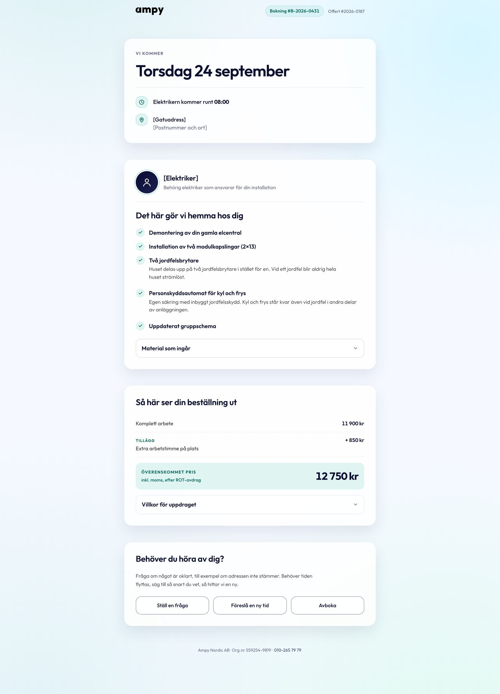
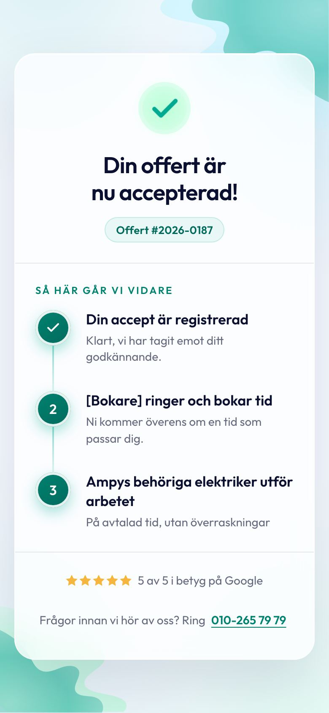
Paritetsmått för processteg, testimonial-kort, CTA-band och header mot källorna vid 1440 och 390 står i site/_bygglogg/S4.md (probe: site/_probes/s4-parity.mjs). Blocken i full bredd: s4-harness.html.